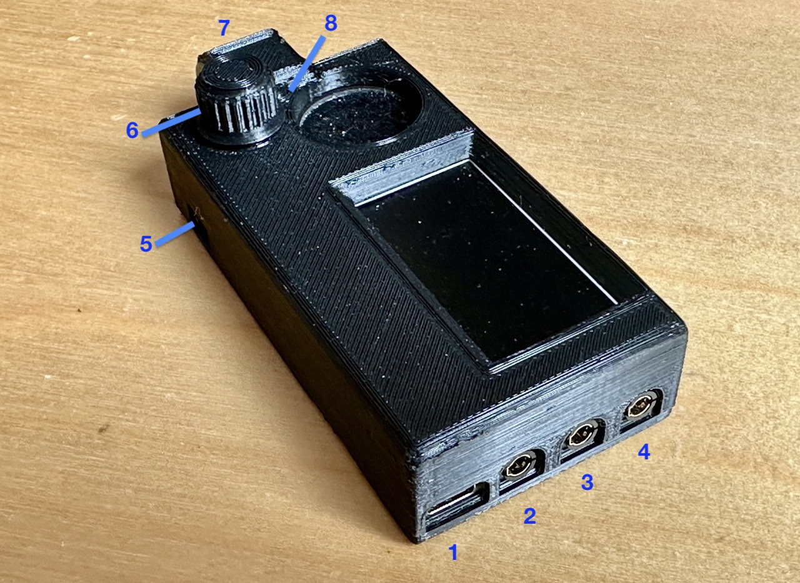
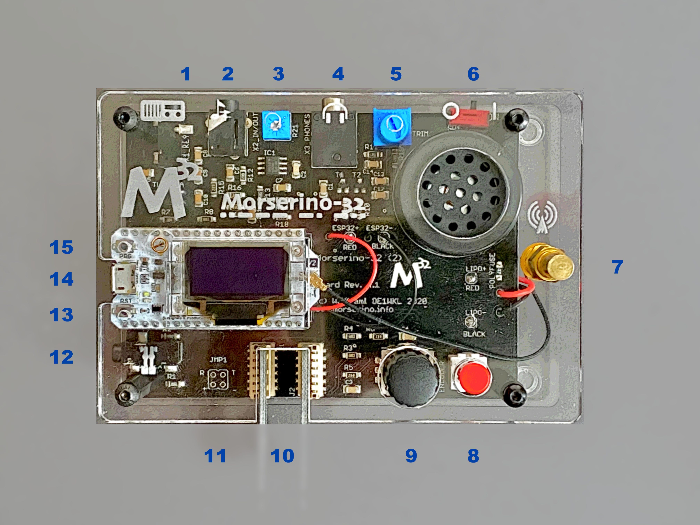
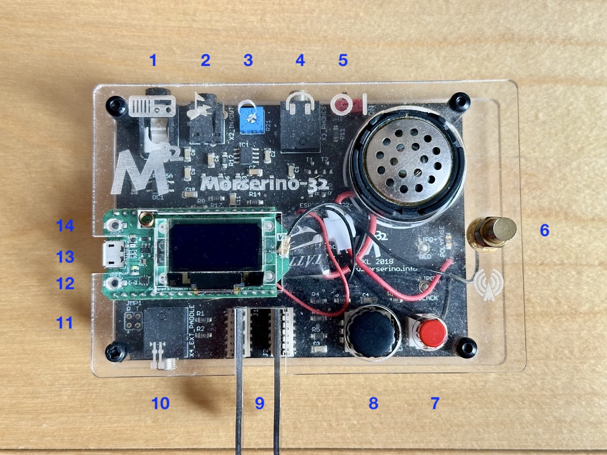
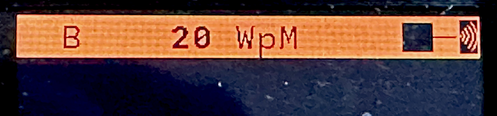

Morserino-32
User Manual
Version 8.x
April 2026
April 2026
User Manual
M32 — User Manual
Edition V 8.x, April, 2026
© Copyright 2016-2026 by Willi Kraml, OE1WKL
This work is licensed under a CC BY 4.0 license. To view a copy of this license, visit http://creativecommons.org/licenses/by/4.0/
This document has been revised for firmware version 8.x. The font family used is Lato.
“Morserino-32 – A multi-functional Morse Code Device, ideal for learning and training, and having fun.”
This manual reflects the features of firmware Version 8.x of the Morserino-32. This firmware version is available for the new Morserino Pocket (M32Pocket), as well as for the earlier 1st and 2nd editions of the Morserino-32. The functionality provided by this version is basically the same for all three Morserino editions, with the exception that the M32Pocket does not have LoRa transceiver capabilities in its standard configuration, but offers new features such as a colour display, games, and a battery status icon.
I would like to thank all those who contributed–through code, comments, suggestions, criticism, reviews, blog entries, Youtube videos and other means–to making the Morserino-32 a successful and outstanding product. Among the many contributors, one deserves special mention: Hari, OE6HKE — without him the M32 Pocket wouldn’t exist!
What is new in Version 8?
In Echo Trainer Mode, you can set a speed limit for keying your input.
Generation of random call signs has been improved. You can now also set a filter to only get calls from a certain continent, or also filter out very rare prefixes.
File Player can do multi-part files now (a poor man’s way of supporting several files ;-) If an uploaded text file is recognized as multipart, you will be asked which part you want to use when you start file player.
For the M32 Pocket only: Battery level and charging status is now shown through an icon on the top line of the display, while you are within a menu.
Also for the M32 Pocket only: We have begun to implement games, to bring even more fun to learning and training Morse code! The first game is “Morse Invaders”: the player has to prevent the invading letters from planet Morse (or was it Mars?) from reaching the ground.

| # | Connector / Control | Usage |
|---|---|---|
| 1 | USB-C | Use a normal 5V USB Charger to power the device and charge its LiPo Battery. The microcontroller firmware can also be reprogrammed through USB; another method to update the Morserino-32 firmware is through a WiFi connection. You can also output keyed or decoded characters on the USB serial device to use this information in a computer program – see the preference Serial Output for further information. |
| 2 | 3.5 mm Phone Jack (3 poles): External Paddle | Use this to connect either an external (mechanical) paddle (tip is left paddle, ring is right paddle, sleeve is ground), or a straight key (tip is the key). |
| 3 | 3.5mm Phone Jack (3 poles): to TX | Connect this to your transmitter or transceiver if you would like to key them with this device. Only the tip and sleeve are being used. |
| 4 | 3.5mm Phone Jack (4 poles): Headphones / Audio In / Line Out | Connect your headphones (with 3-pol or 4-pole plug) here. Audio input for the CW decoder; connect the audio output of a receiver for decoding CW signals. Audio output (for external amplifiers or PC etc.). The assignments to the jack are as follows: Tip and 1st ring – audio or headphones out; 2nd ring: ground; sleeve: audio in. See also section 6.2.1 General Preferences for available settings regarding this connector! |
| 5 | Power Switch | Connect / disconnect the LiPo battery from the device. For frequent use of the Morserino-32 you can leave the battery connected. The ON position is towards the touch paddles, and marked with a small notch on the case. If you will not use the device for several days, disconnect the battery (through the Power Switch), as otherwise it will be slowly discharged. For charging, the battery needs to be connected, i.e. the switch must be in the ON position! |
| 6 | ENCODER – Encoder and its Pushbutton switch | Can be rotated and is also a push-button switch. Used to make your selection within menus, to adjust speed, volume, or scroll the display, and to set various preferences and options. |
| 7 | Touch paddles | These are capacitive touch paddles. Please note that for left-handed use, the display can be flipped 180°! |
| 8 | FN Button switch (integrated into the case) | When the device has gone into deep sleep, this wakes up and restarts your Morserino. When the device is up and running (performing one of the operation modes), a short press of the FN button toggles the rotary encoder between adjusting the keyer speed and volume control. A long press of the FN button allows you to scroll the display with the rotary encoder, pressing the button again changes the function back to speed control. See the section 4.2 Using the ENCODER Knob and FN Button for further details. A double click of this button reduces display brightness in several steps. |

| # | Connector / Control | Usage |
|---|---|---|
| 1 | 3.5mm Phone Jack (3 poles): to TX | Connect this to your transmitter or transceiver if you would like to key them with this device. Only the tip and sleeve are being used. |
| 2 | 3.5mm Phone Jack (4 poles): Audio In / Line Out | Audio input for the CW decoder; connect the audio output of a receiver for decoding CW signals. Audio output (pretty close to a pure sine wave) that is not influenced by setting the loudspeaker volume. The assignments to the jack are as follows: Tip and 1st ring – audio in; 2nd ring: ground; sleeve: audio out. |
| 3 | Audio Input Level Trimmer | Adjust audio input level with the help of this potentiometer; there is a special function to help with level adjustment, see section Appendix 3 Adjusting Audio Level. |
| 4 | 3.5 mm Phone Jack (3 poles): Headphones | Connect your headphones here (any stereo headphones with standard phone jacks from mobile phones should work) to listen through headphones and switch off the speaker. You cannot attach a loudspeaker directly to this jack without providing some interface (headphone out needs a DC connection to ground through 50 – 300 Ohms). |
| 5 | Phones Level Trimmer | Used to adjust the headphone level for maximum comfort. 1st edition M32 does not have this. |
| 6 | Power Switch | Connect / disconnect the LiPo battery from the device. For frequent use of the Morserino-32 you can leave the battery connected. The ON position is towards the side of the antenna connector. If you will not use the device for several days, disconnect the battery (through the Power Switch), as otherwise it will be slowly discharged. For charging, the battery needs to be connected, i.e. the switch must be in the ON position! |
| 7 | SMA female Antenna Connector | Connect an antenna suitable for the operating frequency (standard is around 433 MHz) for LoRa operation. Do not transmit LoRa without an antenna or a dummy load! |
| 8 | FN Button (RED button) | When the device has gone into deep sleep, this wakes up and restarts your Morserino. When the device is up and running (performing one of the operation modes), a short press of the FN button toggles the rotary encoder between adjusting the keyer speed and volume control. A long press of the FN button allows you to scroll the display with the rotary encoder, pressing the button again changes the function back to speed control. While in the menu, a long press starts the mode to adjust audio input level. See the section 4.2 Using the ENCODER Knob and FN Button for further details. A double click of this button reduces display brightness in several steps. |
| 9 | ENCODER – Encoder and its Pushbutton Switch | Can be rotated and is also a push-button switch. Used to make your selection within menus, to adjust speed, volume, or scroll the display, and to set various preferences and options. |
| 10 | Connectors for Touch Paddles | These PCB connectors accept the capacitive touch paddles. If you are only using an external paddle (or for transport), you may remove the touch paddles. |
| 11 | Serial Interface | You can connect a cable (directly or through a 4-pole pinhead connector) to an external serial device, e.g. a GPS receiver module (this is currently not supported by the firmware). The 4 poles are T (Transmit), R (Receive), + and - (3.3V power from the Heltec module). |
| 12 | 3.5 mm Phone Jack (3 poles): External Paddle | Use this to connect either an external (mechanical) paddle (tip is left paddle, ring is right paddle, sleeve is ground), or a straight key (tip is the key). |
| 13 | Reset Button | Through a small hole you can reach the Reset button of the Heltec module (not needed for normal operation). |
| 14 | USB – Micro USB Connector | Use a normal 5V USB Charger to power the device and charge its LiPo Battery. The microcontroller firmware can also be reprogrammed through USB. You can also output keyed or decoded characters on the USB serial device to use this information in a computer program – see the preference Serial Output for further information. |
| 15 | PRG Button | Through a small hole you can reach the Programming Button of the Heltec module (not needed for normal operation). |

| # | Connector / Control | Usage |
|---|---|---|
| 1 | 3.5mm Phone Jack (3 poles): to TX | Connect this to your transmitter or transceiver if you would like to key them with this device. Only the tip and sleeve are being used. |
| 2 | 3.5mm Phone Jack (4 poles): Audio In / Line Out | Audio input for the CW decoder; connect the audio output of a receiver for decoding CW signals. Audio output (pretty close to a pure sine wave) that is not influenced by setting the loudspeaker volume. The assignments to the jack are as follows: Tip and 1st ring – audio in; 2nd ring: ground; sleeve: audio out. |
| 3 | Audio Input Level Trimmer | Adjust audio input level with the help of this potentiometer; there is a special function to help with level adjustment, see section Appendix 3 Adjusting Audio Level. |
| 4 | 3.5 mm Phone Jack (3 poles): Headphones | Connect your headphones here (any stereo headphones with standard phone jacks from mobile phones should work) to listen through headphones and switch off the speaker. You cannot attach a loudspeaker directly to this jack without providing some interface (headphone out needs a DC connection to ground through 50 – 300 Ohms). |
| 5 | Power Switch | Connect / disconnect the LiPo battery from the device. For frequent use of the Morserino-32 you can leave the battery connected. The ON position is towards the side of the antenna connector. If you will not use the device for several days, disconnect the battery (through the Power Switch), as otherwise it will be slowly discharged. For charging, the battery needs to be connected, i.e. the switch must be in the ON position! |
| 6 | SMA female Antenna Connector | Connect an antenna suitable for the operating frequency (standard is around 433 MHz) for LoRa operation. Do not transmit LoRa without an antenna or a dummy load! |
| 7 | FN Button (RED button) | When the device has gone into deep sleep, this wakes up and restarts your Morserino. When the device is up and running (performing one of the operation modes), a short press of the FN button toggles the rotary encoder between adjusting the keyer speed and volume control. A long press of the FN button allows you to scroll the display with the rotary encoder, pressing the button again changes the function back to speed control. While in the menu, a long press starts the mode to adjust audio input level. See the section 4.2 Using the ENCODER Knob and FN Button for further details. A double click of this button reduces display brightness in several steps. |
| 8 | ENCODER – Encoder and its Pushbutton Switch | Can be rotated and is also a push-button switch. Used to make your selection within menus, to adjust speed, volume, or scroll the display, and to set various preferences and options. |
| 9 | Connectors for Touch Paddles | These PCB connectors accept the capacitive touch paddles. If you are only using an external paddle (or for transport), you may remove the touch paddles. |
| 10 | 3.5 mm Phone Jack (3 poles): External Paddle | Use this to connect either an external (mechanical) paddle (tip is left paddle, ring is right paddle, sleeve is ground), or a straight key (tip is the key). |
| 11 | Serial Interface | You can connect a cable (directly or through a 4-pole pinhead connector) to an external serial device, e.g. a GPS receiver module (this is not supported by current firmware). The 4 poles are T (Transmit), R (Receive), + and - (3.3V power from the Heltec module). |
| 12 | Reset Button | Through a small hole you can reach the Reset button of the Heltec module (not needed for normal operation). |
| 13 | USB – Micro USB Connector | Use a normal 5V USB Charger to power the device and charge its LiPo Battery. The microcontroller firmware can also be reprogrammed through USB . You can also output keyed or decoded characters on the USB serial device to use this information in a computer program – see the preference Serial Output for further information. |
| 14 | PRG Button | Through a small hole you can reach the Programming Button of the Heltec module (not needed for normal operation). |
This is for the impatient, but is not a replacement for reading the whole manual!
Make sure you have a suitable battery for your Morserino: M32 1st and 2nd generation use a 3.7 V LiPo battery, the M32Pocket uses a 14500 type Li-Ion cell of 3.7 V.
Controls to be used:
• ON/OFF (Battery): Sliding switch located on the back near the loudspeaker. Connects/disconnects battery.
• ENCODER: The black knob that you can rotate and press.
• FN: The other push-button switch (red on the first and second edition Morserinos; integrated into the case on the M32Pocket).
How To Turn On the M32
Either connect a USB power supply, or, if you have a battery installed, turn the battery switch to ON (I).
A start-up screen will briefly appear, showing the firmware version and battery status. Then you will be in the Main Menu (“Select Mode:”), unless you selected the quick start preference; in that case the last operational mode you had chosen will start automatically.
If there is no change in the display for a long time after turning on the M32, it will go into sleep mode. You can wake it up by pressing the FN button.
How To Select a Mode (Menu):
Rotate the ENCODER to find the desired mode. Click the ENCODER to select it or to enter the next lower menu level. Press and hold the ENCODER to exit or go up one level.
How to Change Speed or Volume, and Scroll the Display
This is done with FN and the ENCODER when you are in one of the operational modes. These do not work while you are in the menu.
The speed setting is written to permanent memory after 12 characters are keyed at the same speed. The volume setting is written as soon as you toggle back from the volume setting mode to the speed setting mode with the FN button.
How To Change the Brightness of the Display
There are five levels of brightness. Each double-click of the FN button reduces the brightness slightly. When the lowest level is reached, a double-click resets the display to full brightness.
How To Change Preferences (Settings):
Double-click the ENCODER, then rotate the ENCODER to select the preference you want to change. Press and hold the ENCODER to exit the preference menu.
When a mode is active, only the relevant preferences for that mode are shown. When called from a menu, all preferences are shown.
There are numerous preferences, see section 6 Preferences to find out what they are for.
You can also store and recall preferences in so called “snapshots”, see section 6.1 Snapshots.
How to Use External Paddles and Keys
You can connect external paddles (dual lever or single lever), or a straight key (normal, or sideswiper) to your M32, by using the 3.5 mm connector for external keys.
To use a straight key, you can use the CW decoder mode without changing any preferences. This mode decodes Morse either through the audio I/O connector or from your key. To use the Echo Trainer or Transceiver modes with a straight key, change the Keyer Mode preference to Straight Key.
Note that the CW Keyer mode works differently with a straight key: it behaves the same way as in Decoder mode; with a straight key, you are the keyer, not the Morserino!
You can use the built-in capacitive touch paddles like a sideswiper / cootie key when the Keyer Mode is Straight Key (but not an external paddle, unless it is wired as a sideswiper)!
How To Charge the Battery
Connect USB power, switch battery switch to ON (I).
With the M32 1st or 2nd edition, an orange LED will light up very brightly. When the orange LED is dark, the battery is fully charged. When the orange LED is lit or flickering dimly, the battery is not connected or switched on.
The M32Pocket will display the battery status as an icon whenever you are in a menu.
If you want to use the device with USB power, just plug a USB cable in from virtually any USB charger (it consumes a max of 200 mA, or 500 mA for the M32Pocket, when charging the battery), so any 5V charger will do).
If you run it from battery power, slide the sliding switch to the ON position.
Make sure you install the battery with the correct polarity before turning the switch to the ON position. Reversing the polarity could destroy your Morserino! For the M32Pocket, it is advisable to use a 14500 LiIon cell (3.7 V) with protection against deep discharge.
When the device is off but with the battery connected (sliding power switch is on), it is in deep sleep – in reality: almost all functions of the microcontroller are turned off, and power consumption is minimal (less than 5% of normal operation with M32 1st or 2nd edition, around 1% with M32Pocket).
To turn the device on from deep sleep, press the FN button briefly.
When the Morserino-32 boots up, a startup screen will appear for a few seconds. The top line shows the LoRa frequency that the M32 is configured to use (as a five-digit number; not on the M32Pocket). At the bottom of the display, you will see an indication of how much battery power is left (not on the M32 Pocket). If the battery is low, connect your device to a USB power source. The battery will drain even if you never turn the device on. Although the drain is minimal in deep sleep mode, the battery will be empty after a few days. Therefore, if you intend not to use the Morserino for a longer period of time, disconnect the battery from the device using the power switch at the back.
If the battery voltage is dangerously low when you try to turn on the device, an empty battery symbol will appear on the screen, and the device will not boot up. If you see this symbol, begin charging your battery as soon as possible.
First edition of M32 only: After using any of the WiFi functions, battery measurement does not work correctly until the Morserino-32 is powered down and up again (or a reset with the Reset button has been performed). This is due to a hardware problem on the Heltec board V2.0. In such cases the Morserino-32 displays “Unknown” instead of the battery voltage, and the battery symbol is shown with an inscribed question mark. After a power cycle everything should work OK again.
If the display shows the empty battery symbol although sufficient power should still be available, it is advisable to perform a battery measurement calibration. This is not necessary and hence not available on the M32Pocket. See Appendix 7.1.2: Calibration of Battery Measurement.
To disconnect the device from the battery (turning it off, unless you are USB powered), slide the sliding switch to the OFF position.
To put the device into deep sleep, you have two options:
To charge the battery, connect the device to a reliable USB 5V power source with a USB cable, such as your computer or a USB charger like your phone charger.
Make sure the hardware switch of the device is ON while charging – if you disconnect the battery through the switch, the battery cannot be charged.
When charging a 1st or 2nd edition M32, the orange LED on the ESP32 module is lit brightly, and when the battery is disconnected, this LED will not be lit brightly, but rather be blinking nervously or half lit. Once the battery has been fully charged, the orange LED will not be lit anymore.
You can of course always use the device when it is powered by USB, if the battery is charging or not.
To prevent deep discharge of the battery, always turn off the Morserino-32 via the main slide switch. Do not leave it in sleep mode for extended periods of time. A couple of days is okay if the battery is fully charged.
There is circuitry on board for charging the battery, and it prevents overcharging quite well. But it has no prevention of deep discharge (this is true for 1st and 2nd edition Morserinos; the M32Pocket also prevents deep discharge)!
Deep discharge leads to diminished battery capacity and eventually early death of the battery!
Selecting the various modes and setting preferences is done using the rotary ENCODER and its push-button function.
Rotating the ENCODER leads you through the options or values, clicking the ENCODER knob once selects an option or value, or brings you to the next level of the menu (there are up to three levels in the menu).
A double click of the ENCODER brings you to the preference setting menu. If you do this from the menu, you can change all preferences. If you do this from an active operational mode, only the relevant preferences for the current mode are shown and can be changed.
A long press brings you back to the menu from any of the modes, and within the menu promotes you a level up.
A double click of the FN button reduces display brightness; there are five levels of brightness. Once the lowest level is reached, a double-click resets the display to full brightness.
For M32 1st and 2nd edition only, while you are selecting a menu (e.g. immediately after power-on), a long press of the FN button starts a function to adjust the audio input level (and possibly the output level on a device you connected to the Morserino-32’s line-out port).
On the M32Pocket, a long press of the FN button just keys the transmitter (if you have one connected) and produces a sidetone (this might be useful for setting audio levels on a connected computer, for example).
A click of the FN button turns this function off again. See Appendix 3 Adjusting Audio Level.
While one of the operational modes (keyer, generator, echo trainer etc.) is executed the FN Button allows you to quickly toggle between speed control and volume control with a single click.
A long click of the FN button while a mode is active changes the display and encoder to scroll mode (the display has a buffer of 15 lines, and normally only the bottom three lines can be seen; in scroll mode you can scroll back to the previous lines; while you are in scroll mode, a scroll bar is shown at the far right side of the display, indicating roughly where you are within the 15 lines of text buffer). Clicking FN again in scroll mode changes the screen to its normal operating mode and brings the encoder back to speed control.
When you are in the preference setting menu, a short click of the FN button recalls a preference snapshot, and a long press of the FN button stores a preference snapshot. See the section 6.1 Snapshots for further details.
The display is divided into two main sections: on top is the status line, that gives important information according to the current state of the device, and below that is an area of three scrolling lines where the generated Morse code characters are shown in clear text. All characters from Morse code are shown in lower case, for better readability (but there is a preference to change it to UPPER case); Procedural (“pro”) signs are shown as letters in brackets, like <ka> or <sk>. In addition, when in Echo Trainer mode (see below), the result of your attempt to enter the correct Morse code is shown as ERR or OK (together with some audible signals).
Although only three lines of scrolling text are shown, an internal buffer of 15 lines is available. After pressing and holding the FN button, you can use the encoder to scroll back and make previous lines visible. This works while you are in any mode with screen output. Nothing is lost, and the display reverts to normal behavior once you exit scroll mode.
The Status Line
While a menu is presented to you (either the start menu, or a menu to select preferences), the status line tells you what to do (Select Mode: or Set Preferences:).

This image shows the status line of the older Morserinos. The new M32 Pocket is similar, but might display additional information under certain circumstances.
When in Keyer Mode, CW Generator Mode or Echo Trainer Mode, the status line shows the following, from left to right:
In CW Decoder mode, the letter d appears in that position, and whenever a signal is detected, a small square shows to the left of it.
When in a transceiver mode, you also see two values for speed – the one in brackets is the speed of the signal received, and the other the speed of your keyer.
When using a straight key, the speed shows how fast your keying actually is.
When the digits indicating the speed are shown as bold, turning the rotary encoder will change the speed. When they are shown in normal characters, turning the rotary encoder changes the volume.
You might need to change certain hardware settings, e.g. the screen orientation, or the calibration of the battery measurement. Or you might want to reset (almost) all preferences to their factory value. All these settings are covered in Appendix 1 Hardware Configuration Menu.
You select the operational mode of your Morserino-32 by rotating the ENCODER knob, and quickly pressing (“clicking”) that knob to select that mode (or, in several cases, a sub-menu for a more detailed selection), when you see the menu on the display.
This is an automatic keyer that supports Iambic A, Iambic B (these are sometimes also called Curtis A and Curtis B), and Ultimatic mode, as well as Non-squeeze mode (emulating a single lever key with a dual lever paddle). You can either use the built-in capacitive paddle, or connect an external paddle (dual or single lever paddle). Internal and external paddles work in parallel, so there is no need to configure this.
There are a number of preferences that determine how the automatic keyer works. See the section 6.2.2 Preferences regarding Key, Paddles and Keyer for the details. The following are particularly important here:
External Pol.: If your external key is wired “the wrong way around”, you can correct this here.
Paddle Polarity: On which side do you want the dits and on which the dahs?
Keyer Mode: Select Iambic A or B, Ultimatic mode, Non-Squeeze mode or Straight Key mode.
What are these Iambic Modes? When both paddles of an iambic keyer are pressed, dashes and dots will be generated alternately. They start with the paddle that was hit first. The name “iambic” comes from the fact that in an iambic verse, there are alternating short and long syllables. The name “Curtis,” on the other hand, also used for “Iambic” sometimes, comes from the developer of the groundbreaking Curtis Morse keyer chip, John G. “Jack” Curtis, K6KU (ex W3NSJ).
The difference between modes A and B is how they behave when both paddles are released while the current element is being generated. In Mode A, the keyer stops after the current element. In Mode B, the keyer adds another element opposite the one during which you released the paddles.
In other words, in Curtis B (iambic B) mode, the opposite paddle is checked while the current element (dit or dah) is output. If a paddle is pressed during that time, an additional element opposite the current one is added. This is not the case in Mode A. Since Mode B is tricky to use, it was later changed so that the paddles are checked only after a certain percentage of the element’s duration has elapsed. You can set this percentage with the preferences CurtisB DahT% and CurtisB DitT%.
If you set them to 0, the lowest value, the Mode is identical with the original Curtis B Mode; the later developed “enhanced” Curtis B mode uses a percentage of roughly 35%-40%. If you set the percentage to 100, the highest value, the behavior is the same as in Curtis A mode.
This preference allows you to set any behavior between Curtis A and original Curtis B modes on a continuous scale, and you can set the percentage for dits and dahs separately (this makes sense, as the timing for dits is just a third of that for dahs, and so you might find that you want a higher percentage for dits to feel comfortable).
Ultimatic Mode: In Ultimatic mode, pressing both paddles generates a dit or dah. The type of sound generated depends on which paddle is hit first. Afterwards, the opposite sound is generated continuously. This is advantageous for characters like J, B, 1, 2, 6, and 7. This mode also responds to entries activated on the opposite paddle with the same timing preferences defined for Iambic B mode.
Non-Squeeze Mode: This simulates the behavior of a single-lever paddle when using a dual-lever paddle. Operators who are accustomed to single-lever paddles may have difficulty using dual-lever paddles because they sometimes squeeze the paddles inadvertently, especially at higher speeds. Non-squeeze mode ignores squeezing, which makes it easier for these operators to use a dual-lever paddle.
The Iambic and Ultimatic modes can only be used with the built-in touch paddle or an external dual-lever paddle. The selection of these modes is irrelevant when using an external single-lever paddle.
The preference Latency defines how long the paddles will be “deaf” after generating the current element (dot or dash). In earlier firmware versions, this was set to 0. This resulted in generating more dots than intended, especially at higher speeds. This was because you had to release the paddle while the last dot was still “on.” Now, you can set this value between 0 and 7. This means 0/8 to 7/8 of a dot’s length. The default is 4, or half a dot’s length. If you still generate unwanted dits, increase this value.
For the preference AutoChar Spce (defining a minimum length for the space between characters) see the section 6.2.2 Preferences regarding Key, Paddles and Keyer for details.
Straight Key Mode: This is not really an automatic keyer mode, but it enables the Morserino-32 to be used with a simple straight key.
If you have connected a simple straight key, and have set the Keyer Mode to Straight Key, you can use all Morserino modes (like Echo Trainer, e.g.), but the mode CW Keyer works differently (it works like the Decoder mode); with a straight key, YOU are the keyer, not the Morserino!
Starting with version 5.1, the Morserino incorporates a memory keyer. There are eight memories available, and each can contain up to 47 characters. In addition to standard Morse code characters (letters, numbers, and punctuation), it can also contain pro-signs and a pause marker. For the textual representations of pro-signs and the pause marker, see Encoding of text files in section 5.2.1 What can be generated? below.
Memories can be recalled in the CW Keyer and iCW/Ext Trx modes (but not in the WiFi Trx or LoRa Trx modes for technical reasons). To recall a memory, quickly press the ENCODER knob once. If any memories have been defined, the top line will allow you to scroll through them with the encoder. There is also an EXIT option if you change your mind. An error message will appear if no memories have been defined.
Memories 1 and 2 play repeatedly until stopped by keying something manually; all other memories play once.
The memories can only be defined through the serial protocol, either though some computer software that implements this protocol, or manually through a terminal program. (The serial protocol has been specified in a separate document.)
The command to define a memory is the following:
PUT cw/store/<n>/<content>
This stores <content> in permanent memory number <n> (n is 1 .. 8); if <content> is an empty string, this memory is deleted. <content> can be normal Morse code characters, pro signs, e.g. “<bk>”, and also “[p]” or “\p” for a pause.
If you are using the manual method through a terminal, you need to initiate the serial protocol through the command PUT device/protocol/on before you can enter further commands, and you should also terminate the use of the protocol with the command PUT device/protocol/off.
A much simpler way to store memory content is by connecting your Morserino with a USB cable to a computer, and follow the instructions in Appendix 7 Using a Browser to set up M32 Preferences.
This either generates randomized groups of characters and words for CW training purposes, or plays the contents of a text file in Morse code. You can set a number of options by choosing appropriate preferences (see the section 6.2.4 Preferences regarding CW Generation below).
You can start and stop the CW Generator by quickly pressing a paddle (either one side or both), or by clicking the ENCODER knob (when using a straight key, you can also press that key to start and stop the session).
When it starts, it will first alert you by generating vvv<ka> (..._ ..._ ..._ _._._) in Morse code, before it actually begins generating groups or words.
Enabling the preference Stop/Next/Rep will cause the Morserino to play only one word or group of characters, after which it will stop and wait for paddle input. Pressing the left paddle repeats the current word, and pressing the right paddle generates the next word. This is useful for training your head-copy proficiency. Let it play a word without looking at the screen, and try to decode it in your head. If you are not sure, press the left paddle to repeat the word. If you think you have it right, compare it with the display. You can then either repeat the word (by pressing the left paddle) or look away and press the right paddle for the next word. (You can remember the functions of the left and right paddles by thinking of typical music player buttons – left is back and right is forward.)
Please note that the Each Word 2x and Stop/Next/Repeat options (see section 6.2.4 Preferences regarding CW Generation) are incompatible with each other. If you set one to ON, the other will automatically be set to OFF.
Once you touch a paddle, it shows what it just had played, so you can check if you decoded it correctly. When you touch a paddle again, it will play the next word. This is useful for learning to decode in your head.
Normally the Morserino-32 just continues to generate until you pause it manually, but there is a preference that can be set which makes the device pause after a certain number of words (or letter groups). See Max # of Words in section 6.2.4 Preferences regarding CW Generation.
You can choose between the following at the second level of the menu:
The file player mode remembers where you stopped. (Exit this mode by pressing and holding the encoder. Do not just switch it off or wait for time-out; if you do, the Morserino will not be able to remember where you were.) It will then resume playing from that point the next time you restart the file player. Once the end of the file (or the file part) is reached, it will start at the beginning again.
The file should contain ASCII characters only (upper or lower case does not matter) - characters that cannot be represented in Morse code are just ignored. Pro-signs can be in the file, they need to be written as 2 character representations with either [] or <> around them, e.g. <sk> or [ka], or prepended with a backslash, e.g. \kn.
Pro Signs
The following pro signs are recognized (see further down in 5.4.1 Koch: Select Lesson about the meaning of pro signs):
There are three more “special characters”, formed in the same way like pro signs, that are recognized while playing a file:
Pauses
It is possible to introduce pauses (useful e.g., when you play a QSO text – you can have longer pauses between phrases or when switching from station A to station B). Do this by using <p> or \p (with a space before and after): each <p> (or [p] or \p) introduces a pause of three regular inter-word spaces. Use several pause markers (e.g. like \p \p \p) if you want longer pauses.
Be careful to have the pause marker separated with spaces from each other and from the rest of the text – if not, the whole word (e.g. cq<p>) will be replaced by a pause!
Tone Changes
With the second special character you can introduce tone changes in the file (useful, when you play QSO text, e.g.to distinguish station A from station B) Do this by inserting <t> or \t or [t] (as a separate word, i.e. with at least a blank space before and after!) as a tone marker. At this point, the tone will change (unless you have set the preference Tone Shift to No Tone Shift), and at the next occurrence of the tone marker it will change back to the original tone.
Be careful to have the tone marker separated with spaces from the rest of the text – if not, the whole word (e.g. cq<t>) will be considered as the tone marker, and the rest of the word (in our case “cq”) will be lost!
In Echo Trainer Mode, the tone marker is ignored.
Comments
The third special character within text files serves the purpose of inserting comments. <c> or \c in a word or by itself make this word and the rest of the line a comment that will not be played by file player.
Part separators & Multi-part Files
A part separator is a special form of a comment: If a line starts with a comment indicator and is followed by a dollar sign ($) and some text, this is treated as a part separator. The text after the dollar sign should be short and is treated as a name for the part that starts here. An example for a part separator line would be:
<c>$ Chapter One
If the file starts with a part separator as its first line, the file will be treated as a multi-part file, and when you start file player, it lets you select which part of the file to use (it will display the text after the dollar sign to show you the part name). It then treats this part exactly in the same way as if it were a file by itself (remembers where it stopped playing it, and wraps around to the beginning of the part when it reaches the end of the part).
Randomizing file content
There is also a file player preference called Randomize File. If it is set to “On” (the default is “Off”), the device will skip a random number of words (between 0 and 255) after each word sent. As the file reads wrap around at the end of the file (or file part), you will eventually see all the words in the file (but it could take a while). If your file is an alphabetical list of words, for example, the words generated will still be in alphabetical order during one pass of the file. To get more unpredictable results, it is best to start with a random list of words.
What can this be used for? For example, you could take a list of call signs and upload the file to the Morserino-32. (Check the Morserino-32 GitHub repository for a file containing active HF contest call signs). File Player now lets you practice with these call signs in a random fashion. Visit the Morserino-32 GitHub repository to find more suitable files for training.
Intercharacter Space. This describes the amount of space inserted between characters. The “norm” is a space that is three dits long. To facilitate copying code sent at high speeds and to help learn Morse code, this space can be extended. The code should be sent at a high speed (>18 wpm) to make it difficult to count dits and dahs and to encourage learning the rhythm of each character. In general, it is better to increase the space between words rather than the space between characters. Therefore, it is recommended that this value be set between 3 and 6. See below.
Interword Space. This is normally defined as the length of seven dits. In CW Keyer mode, a new word is determined after a 6-dit pause to avoid text appearing on the display without spaces between words. In CW Trainer mode, you can set the interword space to values between six and 45 dits (more than six times the normal space) to make copying code easier at high speeds. Similar to Farnsworth spacing (see below), this is called Wordsworth spacing. It’s an even better way to learn to copy high-speed code word by word in your head. You can, of course, combine both interword and intercharacter spacing methods.
Since character spacing can be set independently, you can set it higher than the interword spacing, which could cause confusion. To avoid this, the interword spacing will always be at least four dit lengths longer than the character spacing, even if a smaller interword spacing has been set.
The ARRL and some Morse code training programs use a technique called “Farnsworth spacing”, where the spaces between characters and words are lengthened proportionally by a certain factor. You can emulate Farnsworth spacing by increasing both the intercharacter and interword spaces. For example, set the intercharacter space to 6 and the interword space to 14, which effectively doubles all spaces between characters and words. If you do this at a character speed of 20 wpm, the resulting effective speed will be 14 wpm. This will be shown on the status line as (14)20 WpM.
Random Groups: Defines which characters should be contained in the random character groups. You can choose between Alpha / Numerals / Interpunct. / Pro Signs / Alpha + Num / Num+Interp. / Interp+ProSn / Alpha+Num+Int / Num+Int+ProS / All Chars.
Length Rnd Gr: Defines how many characters there should be in a random group. You can either select a fixed length ( 1 to 6), or a randomly chosen length between 2 to 3 and 2 to 6 (length chosen randomly within these limits).
Length Calls: The length of call signs that will be generated. Choose a value between 3 and 6 or Unlimited.
Length Abbrev and Length Words: The length of common CW abbreviations or common English words, respectively, that will be generated. Choose between 2 and 6, or Unlimited.
Each Word 2x: Each “word” (characters between spaces) will be output twice, as a help to learn to copy by ear (ON). This is also called word doubler. If an increased space between the characters has been selected (“Farnsworth Spacing”), the repetition can also be generated with a smaller space (ON less ICS) or without Farnsworth Spacing (ON true WpM).
For the less frequently used preferences Key ext TX, CW Gen Displ and Generator Tx see the section 6.2.4 Preferences regarding CW Generation.
In this mode the Morserino-32 generates a word or group of characters as a prompt. You have the same selection options as with the CW Generator. Then, it waits for you to repeat these characters using the paddle (or a straight key). If you wait too long or your response is not identical to what was generated, an error is indicated on the display and by sound, and the prompt word is repeated. If you enter the correct characters, this is indicated acoustically and on the screen. Then, you are prompted for the next word.
In this mode, the prompt word will not normally be displayed; only your response will be shown.
The sub-menus are the same as for the CW Generator: Random, CW Abbrevs, English Words, Call Signs, Mixed and File Player.
Like in CW Generator mode, you start this mode by pressing a paddle (or the ENCODER, or – if you are using one – the straight key), and then the sequence “vvv<ka>” will be generated as an alert before the echo training starts. You cannot stop or interrupt this mode by pressing the paddle or the straight key – after all, you use the paddle (or straight key) to generate your responses! So the only way to stop this mode is a click of the ENCODER button.
During your response, if you realize you made an error, you can “reset” your response by entering the character for “ERROR”, i.e. a series of 8 dots (sometimes also represented as pro-Sign <HH>; the Morserino accepts any series of dots equal or longer than 7 dots). <err> will show on the display, and you can restart your entry from the beginning.
The M32 also accepts a series of four times the letter e (“eeee”) as a way to reset the response.
Again, like with the CW Generator, you can set a huge range of preferences to fine tune the generation of things. Of particular interest for the Echo Trainer are the ones described below.
Echo Repeats: how often the same word is repeated when the response is either too late or erroneous, before a new word is being generated.
Echo Prompt: This defines how you are prompted in Echo Trainer mode. The possible settings are: Sound only (default; best for learning to copy in your head), Display only (the word you are supposed to enter is shown on the screen, no audible code is generated; good for training paddle input), and Sound & Display, i.e you hear the prompt AND you can see it on the display.
Confrm. Tone: Normally an audible confirmation tone is sounded in Echo Trainer mode. If you turn it off, the device just repeats the prompt when the response was wrong, or sends a new prompt. The visual indication of “OK” or “ERR” will still be visible when the tone is turned off.
Max # of Words: As with CW generator, you can make the M32 pause after a specified number of words.
If this preference is set to a value between 5 and 250 (and not to “Unlimited”), the M32, when pausing after that number of words, will show (for 5 seconds) how many incorrect entries you made (and the number of words) on the top line of the display. Be aware that you can make repeated errors regarding one word, and all of them will be counted!
Adaptv. Speed: This should help you to train for maximum speed. Whenever your response was correct, the speed will be increased by 1 wpm (word per minute); whenever you make a mistake, it will decrease by 1 wpm. Thus you will eventually always train at your limit, which certainly is the best way to push your limits…
Echo Speed Max: Set this to the maximum speed you would like to use for keying in Echo Trainer mode. If you set the speed faster than this value with the Encoder, or if it is getting faster as a result of adaptive speed, the speed for keying your input stays at that maximum (so you can train your copying at faster speeds than you are comfortable to use when keying).
Intercharacter Space and Interword Space: The first preference defines the pause between characters in the prompt the M32 is generating (the same as in the Generator modes, see there); both preferences also have an influence on the “grace time” you have when responding to the prompt. If that grace time is exceeded, the M32 concludes that you finished your input.
In the 1930s, the German engineer Ludwig Koch developed a method for learning Morse code, in which each lesson introduces an additional character. The order is not alphabetical or sorted by the length of the Morse codes, but rather follows a rhythmic pattern. This way, the individual characters are learned as a rhythm rather than a succession of dits and dahs.
Should you want to use the Koch method for learning Morse code (learning and training one character after the other), you will find everything you need in the Menu item “Koch Trainer”.
It has a submenu to enter the lesson you want to set (defining the character you want to add), one to practice just this one new letter (using the mechanism of echo trainer mode, so you are encouraged – but not required – to repeat what you hear), and the modes CW Generator and Echo Trainer, each of the last two with the submenus for Random (groups of random characters out of the so far encountered characters), CW Abbrevs (the abbreviations usually used in CW QSOs), English words (the most common English words) and Mixed (random groups, abbreviations and words mixed randomly). Of course, only the already learned characters will be used –s which means, that while you are still struggling with your first characters, the number of abbreviations and words will be quite limited.
In order to prevent counting dits and dahs, or thinking of and reconstructing what you heard, the speed should be sufficiently high (min. 18 wpm), pauses between characters and words should not be lengthened enormously (and it is always better to just lengthen the pauses between words, and keep the inter-character spaces to more or less the normal space). The M32 allows you set interword space independently from intercharacter space, so you can find a setting that perfectly fits your needs.
Select a “Koch lesson” between 1 and 51 (you will learn 51 characters in total through the Koch method). The number of the lesson and the character associated with that lesson will be displayed in the menu.
The order of the characters learned has not been strictly defined by Koch, and therefore different learning courses use slightly different orders. Here we use the same order of characters as defined by the program “Just Lean Morse Code” as default, which again is almost identical to the order used by the “SuperMorse” software package (see http://www.qsl.net/kb5wck/super.html).
This order is as follows:
| Lesson | Character | Lesson | Character | Lesson | Character / Pro Sign |
|---|---|---|---|---|---|
| 1 | m | 18 | 0 (zero) | 35 | 7 |
| 2 | k | 19 | y | 36 | c |
| 3 | r | 20 | v | 37 | 1 |
| 4 | s | 21 | , (comma) | 38 | d |
| 5 | u | 22 | g | 39 | 6 |
| 6 | a | 23 | 5 | 40 | x |
| 7 | p | 24 | / | 41 | – (minus) |
| 8 | t | 25 | q | 42 | = (also used as Pro Sign BT indicating white space or a paragraph / new section of message) |
| 9 | l | 26 | 9 | 43 | SK (Pro Sign: OUT / end of contact / end of work) |
| 10 | o | 27 | z | 44 | AR (+, also Pro Sign: OUT / end of message) |
| 11 | w | 28 | h | 45 | AS (Pro Sign: WAIT) |
| 12 | i | 29 | 3 | 46 | KN (Pro Sign: OVER / go ahead, specific named station) |
| 13 | . (dot) | 30 | 8 | 47 | KA (Pro Sign: ATTENTION / new message) |
| 14 | n | 31 | b | 48 | VE (Pro Sign: VERIFIED / understood) |
| 15 | j | 32 | ? | 49 | BK (Pro Sign: BREAK-IN / let me interrupt) |
| 16 | e | 33 | 4 | 50 | @ |
| 17 | f | 34 | 2 | 51 | : (Colon) |
There is another Pro Sign, not covered in the Koch lessons as such:
this is the sign <HH> (eight consecutive dits), which indicates an error (the receiver should disregard the previous character(s)).
There is also an option to select the sequence of characters. In addition to the native sequence of characters, you can choose the sequence that is used by the popular on-line training tool Learn CW On-line (LCWO), or the sequence the CW Ops CW Academy courses are using, or the order of the “Carousel” curriculum of the Long Island CW Club (LICW). This can be set in the preferences menu of the Morserino-32, under Koch Sequence.
In the case of attending a course with LICW, you should also set the preference LICW Carousel according to your entry point into their curriculum (eg. if you start a course within BC1 – Basic Course 1 – with the characters p, g and s, set this to “BC1: p g s”. All further characters you are going to learn in BC1 will be reflected in the same order as your Koch lessons in the Morserino.
Once you have finished BC1, you will enroll in BC2, say beginning with characters 7, 3 and ?, and so you should now set this preference to “BC2: 7 3 ?”.)
The sequence of characters when “LCWO” is chosen is as follows:
| Lesson | Character | Lesson | Character | Lesson | Character |
|---|---|---|---|---|---|
| 1 | k | 18 | f | 35 | 7 |
| 2 | m | 19 | o | 36 | c |
| 3 | u | 20 | y | 37 | 1 |
| 4 | r | 21 | , (comma) | 38 | d |
| 5 | e | 22 | v | 39 | 6 |
| 6 | s | 23 | g | 40 | 0 |
| 7 | n | 24 | 5 | 41 | x |
| 8 | a | 25 | / | 42 | - |
| 9 | p | 26 | q | 43 | SK |
| 10 | t | 27 | 9 | 44 | AR |
| 11 | l | 28 | 2 | 45 | KA |
| 12 | w | 29 | h | 46 | AS |
| 13 | i | 30 | 3 | 47 | KN |
| 14 | . | 31 | 8 | 48 | VE |
| 15 | j | 32 | b | 49 | BK |
| 16 | z | 33 | ? | 50 | @ |
| 17 | = | 34 | 4 | 51 | : |
And the CW Academy sequence of characters is this:
| Lesson | Character | Lesson | Character | Lesson | Character |
|---|---|---|---|---|---|
| 1 | t | 18 | m | 35 | k |
| 2 | e | 19 | w | 36 | j |
| 3 | a | 20 | 3 | 37 | 8 |
| 4 | n | 21 | 6 | 38 | 0 |
| 5 | o | 22 | ? | 39 | = |
| 6 | i | 23 | f | 40 | x |
| 7 | s | 24 | y | 41 | z |
| 8 | 1 | 25 | , | 42 | BK |
| 9 | 4 | 26 | p | 43 | SK |
| 10 | r | 27 | g | 44 | . |
| 11 | h | 28 | q | 45 | - |
| 12 | d | 29 | 7 | 46 | KA |
| 13 | l | 30 | 9 | 47 | AS |
| 14 | 2 | 31 | / | 48 | KN |
| 15 | 5 | 32 | b | 49 | VE |
| 16 | u | 33 | v | 50 | @ |
| 17 | c | 34 | AR | 51 | : |
The sequence of the LICW courses is as follows:
| Lesson # | Character | Lesson # | Character Pro Sign | Lesson # | Character / Pro Sign |
|---|---|---|---|---|---|
| 1 | r | 18 | b | 35 | 6 |
| 2 | e | 19 | k | 36 | . |
| 3 | a | 20 | m | 37 | z |
| 4 | t | 21 | y | 38 | j |
| 5 | i | 22 | 5 | 39 | / |
| 6 | n | 23 | 9 | 40 | 2 |
| 7 | p | 24 | , | 41 | 8 |
| 8 | s | 25 | q | 42 | BK |
| 9 | g | 26 | x | 43 | 4 |
| 10 | l | 27 | v | 44 | 0 |
| 11 | c | 28 | 7 | 45 | |
| 12 | d | 29 | 3 | 46 | |
| 13 | h | 30 | ? | 47 | |
| 14 | o | 31 | + | 48 | |
| 15 | f | 32 | SK | 49 | |
| 16 | u | 33 | = | 50 | |
| 17 | w | 34 | 1 | 51 |
The LICW curriculum teaches just 44 characters – if you want to learn the remaining characters ( - <KA> <AS> <KN> <VE> @ : ), you have to set the character sequence to CW Academy and continue there with lesson 45.
You can also use the Koch Trainer to practice with a specific set of characters. First, upload a text file to the file player that contains the characters you want to train. They can be one “word” or several words on one line or more. Then, set the preference Koch Sequence to the new option Custom Chars. The Koch Trainer will then read the characters from the file.
Now, you can use the Koch Trainer (CW Generator or Echo Trainer), and it will use those characters for your training. The Koch lesson setting does not influence this process.
To change the character set, upload a new text file and select Custom Chars again. Even if it had been selected before, you must select Custom Chars again to prepare the new character set. If you just upload a new text file, the custom character set will not change. You must go into preferences and select Custom Chars again.
This is a feature, not a bug!
It means you can switch between training your characters and using a different text file for the file player. Setting Koch Sequence to M32, LCWO, LICW, or CW Academy reverts to the “normal” Koch Trainer option.
By selecting this menu item a new character will be introduced (according to the Koch lesson selected – see the previous menu entry) – you will hear the sound, and see the sequence of dots and dashes quickly on the screen, as well as the character displayed on the screen. This will be repeated until you stop by pressing the ENCODER knob. After each occurrence you have the opportunity (but no obligation) to repeat with the paddles what you have heard, and the device will let you know if this was correct or not.
Once you have mastered the new character, you can progress to either CW Generator or Echo Trainer within the Koch Trainer, in order to practice the newly learned character in combination with all the characters you have learned so far.
The functionality is the same as described above for these two functions, with the following small differences:
The Adaptive Random mode modifies the random selection of characters with feedback from the keyed responses. A wrong character will increase its probability to be selected. A correctly keyed character will reduce its probability.
To start the adaptive mode select: Koch Trainer > Echo Trainer > Adapt. Rand.
Remarks:
There are three or four transceiver modes in the Morserino-32, depending on the availability of LoRa with your M32.
If you have LoRa, the first one is a self contained transceiver for communication with Morse code, using LoRa spread spectrum radio technology (in the standard version on the 433 MHz band).
The next one uses the Internet Protocol (specifically UDP on port
There is now also an alternative WiFi mode (EspNow), that allows peer-to-peer communication between Morserinos in close vicinity without the use of an access point.
This is only available if your Morserino includes a hardware LoRa transceiver (as was the case with 1st and 2nd edition Morserinos, but is not the case with the M32Pocket in its default configuration)!
As mentioned earlier, this is a Morse code transceiver that uses LoRa to transmit Morse code to other Morserino-32s. In addition to the CW keyer functionality, it sends whatever you key through the LoRa transceiver. This uses a special data format that encodes the dots and dashes you key, regardless of whether they are legal Morse code characters. It also listens on the band when you are not keying, so you can have interactive conversations in Morse code between two or more Morserino-32 devices! Please be aware that characters are transmitted word by word. Therefore, there is a slight delay on the receiving end, so QSK is not possible. This encourages you to use proper handover procedures.
Basically, the LoRa transceiver mode uses the same interface as the CW Keyer. But as soon as you receive something, the status line also shows the speed of the sending station in addition to your own speed – you see something like 18r20sWpM, which indicates you are receiving a station with a speed of 18 Wpm, and you are sending at 20 WpM. In addition, the volume bar on the right of the status line changes its function: instead of indicating the current volume level, it gives you an indication of the signal strength – a crude form of an S-Meter, if you like. the full bar indicates an RSSI level of roughly -20dB, and the bar begins to show at a level of roughly -150dB.
Pressing the FN Button still enables you to set the audio output level.
Morse characters received by the transceiver are shown in bold in the (scrollable) text area on the display, while everything you are sending is shown in regular characters.
Another feature is worth mentioning here: The frequency of the tone you are hearing when you are receiving the other station is adjusted through the “Pitch” preference, as in the other modes. When you are transmitting, the pitch of the tone can be the same, or a half tone higher or lower then the receiving tone – this is being set through the Tone Shift preference, in the same way as in Echo Trainer mode.
One other thing you might want to know: the LoRa CW Transceiver does not work like a CW transceiver on shortwave, where an unmodulated carrier is being keyed, and the delay between sender and receiver is just defined by the delay in the path of the electromagnetic waves carrying the signals. LoRa uses a spread spectrum technology to send data packets – in a way a bit similar to WiFi that you use on your phone or PC. Therefore all you are keying in is being encoded into data first – essentially the speed and all the dots, dashes and pauses between characters. As soon as the pause is long enough to be recognized as a pause between words (as a blank space, as it were), the whole data packet assembled so far is being transmitted and in due course being played back at the indicated speed by the receiving Morserino-32.
More information about LoRa can be found in Appendix 2 More information about LoRa.
You can use this transceiver mode to communicate with your CW buddy using WiFi, either on your local area network, or across the Internet, or even peer-to-peer without an access point – this method is called EspNow, and the Morserino uses its broadcast functionality – this is then very similar to using LoRa, and obviously the range is limited (depending on the environment, from a few meters up to maybe 50 meters if there is a clear line of sight). See further down in section 5.8.6 WiFi Select how to select either an access point or EspNow for the WiFi Trx mode.
Morserino-32 can make use of two channels when operating in EspNow mode. This can be used, for example, in a class room situation, to create two independent groups that do not interfere with each other, or in environments suffering from very high WiFi “noise” - when the primary channel does not work properly, try the secondary channel.
The channels are selected through the preference Trx Channel, see section 6.2.6 Preferences regarding Transmitting and Decoding.
To use traditional Wi-Fi, you must be connected to a Wi-Fi access point. This means you must have performed the Wi-Fi Config function beforehand. It is very easy to use transceiver mode on your local network: select it from the menu to communicate without configuring a peer address. It will send to the broadcast address 255.255.255.255, which can be received by all devices on the network. The Morserino-32 uses UDP port 7373 for asynchronous communication.
When you start WiFi Trx, the IP address of your peer (or “IP Broadcast”) will briefly appear on the display. If you are using EspNow, EspNow will be indicated.
To communicate with a specific Morserino-32 over the internet, configure the IP address of your peer. This is done through the Config WiFi menu item, which has a third field in addition to SSID and Password. Enter the IP address or DNS host name of your peer in this field, and the Wi-Fi transceiver will send packets to that IP address.
There are some services on public Internet servers that can communicate over the protocol used by the Morserino, e.g. a “chat bot” on cq.morserino.info – these can normally be used without further set-up, unless your Internet router does not allow all port numbers to go through; the situation is more complicated, if your peer is also behind a firewall or NAT router:
If the IP address is not on your local network and you are behind a firewall or router that treats your network as private, the Morserino can send packets to the internet (unless specific firewall rules block most UDP ports), but packets from your peer behind another firewall will be blocked by the router. In this case, you need to configure “port forwarding” to tell the router to send all UDP packets on port 7373 to your Morserino. At the same time, you need to give your buddy your outside IP address (i.e., the IP address of your router’s interface with your internet provider), and he or she must do the same by giving you his or her internet-facing IP address, which you will enter into your Morserino. It sounds complicated at first, but it isn’t really that bad.
Another option, perhaps a bit more complicated, would be to set up a VPN (Virtual Private Network), so that both your Morserinos are on the same “virtual network” and hence can talk to each other without any firewall rules blocking the traffic. How to do this goes clearly beyond the scope of this manual – ask an Internet guru for further details!
In this mode a transceiver connected to the Morserino-32 is being keyed, or you can use the line-out audio to either key for example an FM transceiver, or use CW over the Internet (iCW – this uses Mumble as an audio exchange protocol). Using Bluetooth, you can also connect to a computer and through that computer to VBand, another Internet-based CW facility (see the section 6.2.1 General Preferences for choosing the VBand bluetooth setting).
Any CW signals coming in as audio through the audio-in port are being decoded and displayed on the screen. An external transceiver connected through the connector “to Tx” will be keyed by the keyer, or you can use the audio output on the Line-Out connector to feed it into a computer, or into an FM transceiver.
In this mode, Morse code characters are being decoded and shown on the screen. The Morse code can either be entered via a Morse key (“straight key” - connected to the jack where you would normally connect an external paddle; you can also use one or both of the touch paddles to manually key the decoder). Using the decoder in this way, you can control and improve your keying with a straight key, by checking, if the decoder decodes correctly what you tried to send.
You can also decode a tone input (at the audio input port) taken for example from a receiver. The tone should be at around 700 Hz. Optionally there is a pretty sharp filter (implemented in software) that detects just tones in a very narrow range around 700 Hz, and disregards all others. This is being used by selecting the preference “Narrow” (see the section 6.2.6 Preferences regarding Transmitting and Decoding).
The status line is slightly different from the other modes. First of all, the rotary encoder is always in the volume setting mode – speed is determined from the decoded Morse code and cannot be set manually. Pressing the ENCODER button will end the decoder mode and bring you back to the Start Menu.
On the left of the status display at the top, you will see a small square or rectangle whenever the key is pressed (or a 700 Hz tone is detected), and to the right of it the letter d – this replaces the indicator for the keyer mode that is visible in the other Morserino modes.
The current speed as detected by the decoder is displayed as WpM on the status line.
This mode does not have many preferences (see the section 6.2.6 Preferences regarding Transmitting and Decoding); maybe the most important is the ability to switch the filter bandwidth of the audio decoder between narrow (ca 150 Hz) and wide (ca 600 Hz). For decoding signals from a transceiver (where there might be other signals in the vicinity), it is usually best to set the bandwidth to Narrow and tune the signal to 700 Hz (± 5%). For decoding signals from an FM transceiver, or from iCW or other environments with little interference, it is better to use the Wide setting – in that case the audio frequency does not need to be very close to 700 Hz.
The Morserino Pocket features now CW-based games that make learning and practicing Morse code more engaging. Games are found under the “Games” menu entry. Currently, the “Morse Invaders” game is the first that is available.
Morse Invaders is a game where characters fall down the color display, and you must key the correct Morse code to destroy them before they reach the bottom. It combines the fun of a classic arcade game with effective CW training.
The character pool is determined by your current Koch lesson setting – the game uses exactly the characters you have been learning. This means the game adapts to your level automatically. Each Koch lesson forms a “stratum” within which sub-levels of increasing difficulty are formed by raising the speed at which characters fall and how often new ones appear.
Morse Invaders is only available on the M32Pocket.
Navigate to Games > Morse Invaders in the main menu. The game menu screen shows your current Koch lesson, the characters in your pool, your speed setting, and a high score table (if any scores have been recorded).
On the game menu screen:
Rotate the ENCODER to change the starting sub-level. Press the FN button to toggle the encoder between changing the sub-level and changing the speed (a “<” marker indicates which value the encoder currently controls). Touch a paddle to start the game. A long press of the ENCODER exits back to the Morserino menu.
After touching a paddle, a short countdown (“3… 2… 1… GO!”) leads into the game.
Characters appear at the top of the screen and fall downward in one of six lanes. Each character is shown as a coloured rectangle: green for letters, yellow for numbers, orange for punctuation, and magenta for pro signs. Pro signs are displayed as their two-letter abbreviation with a bar above.
The default for the game is portrait orientation, with the touch paddles at the bottom. You can change this to landscape with the Preference “Invader Orient.”, and the landscape orientation will acknowledge your setting of “left-handed” (see Appendix 1: Hardware Configuration Menu).
To destroy a falling character, key its Morse code using the paddles (or an external key). The game automatically targets the lowest – and therefore most urgent – character that matches what you keyed. A correct match destroys the character with a brief animation and awards points. If no falling character matches the character you keyed, this counts as a miss and your streak is reset, but you do not lose a life.
If a character reaches the bottom of the screen without being destroyed, you lose one of your three lives. The game ends when all lives are lost.
The screen is divided into three zones:
The top bar (HUD) shows your remaining lives as coloured dots on the left, the current level (displayed as Koch lesson – sub-level, e.g. “12-3”) in the centre, and your score on the right.
The main area shows the six lanes with falling characters.
The bottom bar (keying zone) shows your current speed in WPM on the left, a streak counter when you reach five or more consecutive hits, and the last character you keyed in the centre.
ENCODER: Change your keying speed (WPM). The speed is adjusted immediately and is also stored when you exit the game.
ENCODER click (short press): Pause the game. Click again to resume.
ENCODER long press: Exit the game and return to the Morserino menu.
FN short press: Toggle between speed and volume control.
FN long press: Also exits the game.
Base points per destroyed character are 10, multiplied by several factors:
Speed multiplier: your current WPM divided by 10. At 20 WPM you score double; at 30 WPM, triple.
Urgency bonus: destroying a character that is in the bottom 30% of the screen earns double points.
Streak bonus: consecutive hits without a miss increase the multiplier – ×1.5 at 5 hits, ×2 at 10, and ×3 at 20.
An extra life is awarded every 1000 points, up to a maximum of 5 lives.
Every 10 destroyed characters advances you to the next sub-level within your Koch lesson. Each sub-level increases the falling speed, the spawn rate, and the maximum number of simultaneous characters on screen.
When you advance, a brief “LEVEL” screen appears and any remaining characters are cleared for a small bonus.
The game stores the top five high scores. Each entry records the score, Koch lesson, sub-level reached, and speed. High scores are shown on both the game menu screen and the game over screen. A new high score is highlighted.
When all lives are lost, the game over screen shows your final score, the level reached, your speed, and statistics including the number of hits, misses, and dropped characters, as well as your accuracy percentage.
From the game over screen, click the ENCODER to play again (starting from the same sub-level you chose at the beginning), or long press the ENCODER to exit to the Morserino menu.
Start with a lower Koch lesson (fewer characters) and a comfortable speed. The game is most effective as a training tool when you are challenged but not overwhelmed. If characters reach the bottom too quickly, reduce your starting sub-level or lower the WPM. As your recognition improves, increase the Koch lesson to add more characters to the pool.
Fight the Pileup is a CW training game where you practice copying and keying callsigns under time pressure — just like working a real pileup on the bands. The game plays random callsigns as CW audio, and you must decode them by ear and key them back correctly before time runs out.
From the main menu, navigate to Games → Fight Pileup. If this is your first time playing, you will be asked to enter your callsign and name using the encoder and buttons:
Your callsign and name are saved and remembered for future sessions.
After entering your identity, you arrive at the lobby screen. Here you can configure the game before entering the pileup:
The difficulty level controls how much time you have to respond, how many timeouts before you lose a life, and how quickly new challenges appear:
| Level | Timeout | Drops per Life |
|---|---|---|
| EASY | 45 sec | 5 |
| NORMAL | 30 sec | 4 |
| HARD | 20 sec | 3 |
| EXPERT | 12 sec | 2 |
Before entering the pileup, you must key a short random code (4 characters) on your paddles. This serves as a warm-up and confirms that your paddles are working. Each correctly keyed character lights up in green. If you make a mistake, the sequence resets — just try again.
Long press to cancel and return to the lobby.
Once you pass the code challenge, the pileup begins. The game presents you with a continuous stream of random callsigns to decode and key back.
Listen: A callsign is played as CW audio at a different pitch from your sidetone, so you can distinguish it from your own keying. The callsign repeats automatically.
Decode: Try to identify the callsign by ear. After the 3rd play, a text hint appears on screen — but try to get it before that!
Key your response: Use your paddles to key the callsign you heard. Your keyed characters appear on screen as they are decoded.
Automatic submission: Your response is automatically submitted after a word-length pause (about 1 second of silence). You can also click the encoder to submit immediately.
Result:
From top to bottom:
| Event | Points |
|---|---|
| Correct answer | +100 base + 10 × streak bonus |
| Wrong answer | −50 |
| Timeout | −25 |
The streak counter increases with each consecutive correct answer and resets on any wrong answer or timeout. A higher streak means more bonus points per correct answer.
You start with 3 lives. Every N timeouts costs you a life (N depends on the difficulty level). When all lives are lost, the game ends and your final score is displayed.
| Control | Action |
|---|---|
| Paddles | Key your response |
| Encoder | Adjust WPM speed or volume (see FN toggle) |
| Click (encoder) | Submit your response immediately |
| FN short click | Toggle encoder between WPM and volume |
| Long press (encoder or FN) | Exit game |
The status bar shows which parameter the encoder controls, indicated by a < arrow:
15 wpm < ← encoder adjusts speed
Vol 12
15 wpm
< Vol 12 ← encoder adjusts volumeStart on EASY difficulty. The 45-second timeout gives you plenty of time to listen to the callsign multiple times before attempting to key it.
Don’t rush. Wait for the text hint to appear after 3 plays if you’re not sure. There’s no penalty for waiting — only for timeouts.
Lower the WPM. Use the encoder to reduce the speed if the CW is too fast. The challenge plays at the same WPM as your keying speed.
Listen for the structure. Callsigns follow patterns: usually a 1-3 letter prefix, a digit, then 1-3 letter suffix (e.g., DL1ABC, W3XY, VK2GR).
Wrong answers let you retry. If you make a mistake, the same callsign replays — you get unlimited attempts within the timeout period.
When all lives are lost, the game over screen shows your final statistics:
Press Click to play again (returns to lobby) or Long press to exit to the main menu.
Apart from the functionality of WiFi Transceiver, you can use the WiFi feature of the ESP32 processor used in the Morserino-32 for two important functions of the device, when you are using WiFi through an access point:
For both of these functionalities the file to be uploaded (be it a text file or the compiled binary file for the software update) must be on your computer (even a tablet or smartphone will work, as you only need basic web-browser functionality on that device), and your Morserino must be connected to the same WiFi network as your computer.
In order to connect your Morserino-32 to your local WiFi network, you usually need to know the SSID (the “name”) of the network, and the password to connect to it, known also as the “credentials”. And you must enter these two items into your Morserino-32. As it does not have a keyboard for convenient entry of this information, we use another way of doing it, and for this end another WiFi function has been implemented: network configuration (Config WiFi), which is the first you have to use before you can use the upload or update functions.
For home networks that use a list of allowed MAC addresses (for security reasons), you have to configure your router and enter the M32’s MAC address before you can connect your M32 to the network. In order to be able to do so, there is also a function implemented to show the MAC address on the display.
All network related functions can be found under the menu entry WiFi Functions.
In software version before 2.0 the WiFi functions were not integrated into the main menu. In case you want to update from version 1.x to version 2.x through WiFi, please read Appendix 4: Updating the Firmware via WiFi for Versions < 2.0.
If you have selected “EspNow” instead of an access point, the only WiFi Function available is “WiFi Select”, as all other functions require the use of an access point!
This is the first entry under the menu Wifi Functions, and it displays the Morserino’s MAC address in the status line. Each Morserino has a unique MAC address.
You can use this information to allow the Morserino access to your WiFi network, if your router is configured to recognize only certain MAC addresses.
If you press the FN button, the Morserino-32 will return onto the menu normally. If you do nothing, the Morserino will go into deep sleep, depending on the settings you defined for that, as usual.
Select the sub-menu WiFi Config to proceed with network configuration.
The device will start WiFi as an access point, thus creating its own WiFi Network (with the SSID “morserino”). If you check the available networks with your computer or smartphone, you will find it easily; please select this network on your computer (or tablet, or smartphone – you will not need a password to connect).
Once you are connected, enter http://m32.local into the browser on your computer. If your computer or smartphone does not support mDNS (Android, for example, is not supporting it, and Windows only rudimentary), you have to enter the IP address 192.168.4.1 into the browser instead of m32.local. You will then see a little form with just 3 times 3 empty fields in your browser: SSID of WiFi network?, WiFi Password? and WiFi TRX Peer IP?.
You only need to fill in one set of fields, but you can use two or three sets if you want to store different network configurations for different usage scenarios (e.g., connection to different WiFi networks). There is a separate entry in the WiFi menu to select which configuration you want to use.
Enter the name of your local WiFi network, and the corresponding password (you can leave the third field empty for now), and click on the “Submit” button. Your Morserino-32 will store these network credentials and then restart itself (so the network “morserino” will disappear).
The third field (WiFi TRX Peer IP/Host?) is used, when you want to use the Wifi Transceiver functionality using an access point, i.e. to talk to another Morserino user or other service that supports the Morserino protocol over the Internet. In such a case you have to enter the IP address or the DNS host name, if it has any, of the other Morserino or the service into this field. See section 5.5.2 Wifi Trx above. If you communicate with other Morserinos on your local network, you don’t need an IP address there (it will use the broadcast address by default, so all Morserinos can receive what one of them sends).
Your Morserino cannot make use of a WiFi network with a “captive portal”, as they are often used on public networks. These networks require that a browser is available on the device that wants to connect to the network, and the Morserino-32 does not have a browser…
Your Morserino-32 only supports WiFi networks in the 2.4 GHz band, not in the 5 GHz band.
If you previously selected EspNow through the WiFi / Select menu, you need to select an access point before you can perform WiFi configuration!
If you have configured your WiFi before, and perform this step again, the previously entered SSID name will be pre-filled in the form, and you only need to change it if necessary. The password field will be empty, but if you do not enter a new one, the old password will still be used. The TRX Peer IP address field will also be pre-filled with a value if you have entered one before. If you now delete the values in this field, this IP address will be deleted.
You can configure three different network settings; from version 4.5.1 on the network configurations will not be stored in Snapshots, this means you cannot use snapshots to recall different network settings.
An easier way to configure access points is by using your Morserino connected via USB to a Chrome, Edge or Opera browser, and using the instructions in Appendix 7 Using a Browser to set up M32 Preferences.
Use the sub-menu entry Check WiFi under WiFi Functions to test network connectivity.
This either shows an error message (“No WiFi” and the SSID you had entered), or a success message (“Connected!”), the SSID and the IP address the Morserino got from your WiFi router.
You might have to move your Morserino pretty close to your WiFi router (within the same room is usually OK)! The WiFi antenna of the Esp32 module is rather small and might not pick up very weak WiFi signals.
When you get an error message although you had entered the correct credentials and the Morserino is in direct vicinity of your WiFi router, you should try again – sometimes the first try is not successful, for whatever reasons…
If you press the FN button, this functions returns to the menu. If you do nothing, the Morserino will go into deep sleep, depending on the settings you defined for that, as usual.
Once you configured your Morserino-32 with your local WiFi credentials, you are ready to upload a text file to use for your Morse code training. Currently only one file can reside on the Morserino-32, This means, whenever you upload a new file, the old one will be overwritten.
The file that you upload should be a plain ASCII text file without any formatting (no Word files, pdf documents etc.). German characters (ÄÖÜäöüß) encoded as UTF-8 are allowed and will be converted to ae, oe, ue and ss. The file can contain uppercase and lowercase letters, and all the characters that are part of the Koch method set, including pro-signs (51 different characters in total). Any other characters will just be disregarded when the file is played in Morse code. The file that you upload can be pretty large – you have about 1 MB space available for it (enough to store a copy of Mark Twain’s “The Adventures of Huckleberry Finn”).
See the information about encoding of text files in section 5.2.1 What can be generated? – for example, you can separate a file into several parts, each of which will be treated like a separate file by the File Player.
In order to upload the file, select File Upload from the WiFi Functions menu. After a few seconds (it needs to connect to your Wifi network first) Morserino-32 will indicate that it is waiting for upload. You point the browser of your computer to http://m32.local (or, if that does not work, replace “m32.local” with the IP address shown on the display).
For the upload function your Morserino-32 (and of course your PC or tablet etc.) must be on your local WiFi network again!
First you will see a Login screen on your browser. Use m32 as User ID and upload as password. On the next screen in your browser you will find a file selection dialog – select the file you want to upload (its name or extension doesn’t matter) and click the button labelled “Begin”. Once the upload is completed (it will not take long) the Morserino-32 will return to the menu, and you can now use the uploaded file in CW Generator or Echo Trainer mode.
If for any reason you need to abort the process, you have to restart the device either by completely disconnecting it from power (battery off and USB disconnect), or (for M32 1st or 2nd edition) pressing the Reset button with the help of a tiny screwdriver or a ball point pen (the reset button can be reached through the hole next to the USB connector, towards the external paddle connector).
If it fails: Make sure you use the password upload and NOT update!
Updating the firmware of the Morserino-32 through WiFi is one way of doing it; you can also do this by using the Arduino IDE (or PlatformIO) on your computer (you also need to install a bunch of specific files and libraries for support of the hardware, and then compile the binary from the source code), or, much easier, by using a special update utility (see Appendix 5 Updating the Firmware via USB and an update program), or – and this is the easiest way – by just using a browser and USB (see Appendix 6 Updating the Firmware via USB and a Browser (Webserial)).
You can update to any version, you can “jump” versions, you can also go back to an older version.
Updating the firmware via WiFi is very similar to uploading a text file. You first need to get the binary file from the Morserino-32 repository on GitHub (https://github.com/oe1wkl/Morserino-32 - look for a directory under “Software” called “Binaries”). Get the latest version and download it to your computer. The file name probably looks like this:
m32_Vx.y[...].bin with x.y being the version number.
Now get the WiFi Functions menu again and select the item Update Firmw. Similar to file upload, you point the browser of your computer to http://m32.local (or, if that does not work, the IP address shown on the display, http://n1.n2.n3.n4 – replace n1.n2.n3.n4 with that IP address), and you will eventually see a Login screen. This time you use the user name m32 and the password update (not upload!).
Again you will see a file selection screen next, you select your binary file and click the button labelled “Begin”. This time the upload will take longer – it can take a few minutes, so be patient. The file is big, needs to be uploaded and written to the Morserino-32 and verified to make sure it is an executable file. Finally, the device will restart itself and you should notice the new version number on the display during start-up.
To sum it up, these are the steps for updating the firmware through WiFi:
If it fails: Make sure you use the password update and NOT upload!
Here you can select which network configurations should be used. SSID and Peer Host are being displayed, and you use the encoder to go through the available network configurations.
The item shown when you start this is the currently selected network configuration. If that is what you want, just go back to the menu with a long press of the ENCODER.
The first entry (numbered 0) lets you choose EspNow (WiFi peer-to-peer communication) instead of using an access point.
This menu item, when selected, puts the Morserino-32 into a deep sleep mode, where it will consume considerable less power than when operating normally. But it will still drain the battery within a certain number of days, so this is only meant for shorter breaks between your training sessions. See the section 4.1 Powering On and Off / Charging the Battery further up in this manual.
You always reach the preferences menu by double clicking the rotary ENCODER button. This provides you with a menu of settings (you will see a > character in front the of the current preference, and the line underneath shows the current value). Rotate the encoder to lead you through the available preferences. If you want to leave the preference setting menu, just press the encoder button a bit longer, and you will be back in the operational mode from which you called the preference setting menu (or back in the menu, if you entered a double click from the menu).
When you have reached the preference you want to change, click once. Now the “>” character will be at the bottom line in front of the preference value, indicating that rotating the encoder will change this value. Once you are satisfied with the value, click once to return to the selection of preferences, or press the button a bit longer to leave the preference menu.
Obviously the preferences that can be set vary depending on the mode you are in: When you double click while in a particular mode, you will only get to those preferences that are relevant for the current mode. Did you double click from the Start Menu, you will be presented the complete range of preferences.
Almost all preferences can be reset to their factoy value through the Hardware Configuration Menu. See Appendix 1 for further information.
For different types of training you usually need different settings of the preferences – you might want to change the intercharacter- or interword spaces, or the length of character groups or words, etc. So going from one type of training to the next would require you to change various settings every time.
In order to make this easier, you can use “snapshots” of the settings: once you have changed everything for your first mode of training, you store all current preferences in one of eight snapshots; then you do the same with your other training modes. You can then quickly recall the settings by recalling a particular snapshot.
The “Koch Lesson” that you selected will be stored in non-volatile storage and hence will be available after a restart, but it will not be stored or overwritten in one of the snapshots. The same is true for WiFi settings, the “Serial Out” preference, or your setting of speed and speaker volume.
First, double click to get into the preference menu. Now a long press of the FN button gives you an opportunity to select with the ENCODER at which location you want to store the current settings, from Snapshot 1 to Snapshot 8; a further option reads Cancel Store and allows you to get out without storing a snapshot. Snapshot locations that are already in use are shown in bold, but you can overwrite those as well. Clicking on the ENCODER knob stores the snapshot in the desired location, and gives you a quick indication about its success.
Again, you double click the ENCODER knob first to get into the preferences menu. Now a short click on the FN button lets you select with the ENCODER which of the stored snapshots you want to recall, and you recall it by clicking the ENCODER button; again, there is an option that reads Cancel Recall, which allows you to get out without recalling a snapshot. If there are no snapshots stored, you get a message “NO SNAPSHOTS” and you can leave by clicking any of the buttons.
You can also delete a snapshot that is no longer needed, or that was created in error. Proceed as if you wanted to recall a snapshot, select the one you want to delete, and then click the FN button for deleting it. There will be a confirmation dialog to make sure you really want to delete that snapshot. If you rotete the ENCODER to “Yes” and click it, that snapshot will be deleted, and, like with storing and recalling snapshots, a short message will indicate that the action was successful.
The easiest way to configure your preferences and snapshots is to connect your Morserino via USB to a computer running Chrome, Edge or Opera and using the instructions in Appendix 7Using a Browser to set up M32 Preferences**.
Bold values are default or recommended ones. When called from the start menu, all preferences are available for modification, when called from a running mode, only those that are relevant for this mode are available.
A number of preferences are very generic in nature, and therefore apply to all modes of the Morserino-32.
| Preference Name | Description | Values |
|---|---|---|
| Encoder Click | Turning the encoder may generate a short tone burst, or be silent | Off / On |
| Tone Pitch Hz | The frequency of the side tone, in Hz | A series of tones between 233 and 932 Hz, corresponding to the musical notes of the F major scale from Bb3 to Bb5 (2 octaves) |
| Time Out | If the time specified in this preference passes without any display updates, the device will go into deep sleep mode. You can restart it by pressing the FN button. | No timeout / 5 min / 10 min / 15 min |
| Quick Start | Allows you to bypass the initial menu selection, i.e. at startup the device will immediately begin executing the mode that had been in effect before last shutdown. | ON / OFF |
| Output Case | This changes the case of decoded characters on the display (and also on serial output via USB, and on Bluetooth keyboard output!) from lower case to UPPER CASE. | lower / UPPER |
| Headphone Output | (Only for M32 Pocket) This setting determines what happens when headphones or another device are connected to the headphone output. With the default setting, output will be via the headphones and the speaker will be muted. With “line-out,” output will be via the headphone output at full volume and via the speaker as normal. With “l-o: Var. Vol.” it is similar, but the output via the plug is at the set volume, and with “l-o: Lsp Muted” the output via the plug is at full volume and the speaker is muted. | Phones / line-out / l-o: Var. Vol. / l-o: Lsp Muted Caution: Never plug in headphones when using the line-out options! As playback may occur at full volume, this could cause damage to your hearing or the headphones! |
| Theme | (For devices with a color screen only, e.g. M32Pocket) You can set a color theme for the display, so you are not confined to white on black. | Plain (= white on black) / Blues / ePaper / Mandarin / Darkroom / Veggie / Garnet / Lemonade / Complements |
| Invader Orient. | (For M32 Pocket only) You can select your favorite orientation for games like the Morse Invader game, Portrait (default) or Landscape. If you select Landscape, it uses left-handed orientation if you have set this in the Hardware Configuration. | Portrait / Landscape |
| BLT Kbd Output | Defines what is being sent via Bluetooth (Bluetooth keyboard functionality). The VBand option allows the Morserino to be used as a VBand dongle (for VBand see https://hamrad io.solutions/vband/), Decoded sends all decoded characters not only to the display, but also out via Bluetooth, and the Generic Keyboard option does more or less the same as Decoded, but it sends the code for the “Enter” Key (New Line) when you key (new message), and for the “Backspace” key when you key (i.e. 8 dits). The M32 will appear as a US keyboard (QWERTY layout). | Nothing / Vband Keying / Decoded / Vband+Decoded / Generic Kbd |
| Serial Output | Here you control what is being sent to serial port (USB connector); distinction is made between keyed characters (output from the iambic keyer), decoded characters (from CW decoder or using a straight key), and “generated” characters (from CW Generator etc., also from the receiver side of LoRa or WiFi Transceiver modes). Nothing sends out none of these characters (but certain system or error messages might still appear), while All send out everything. In addition, other information can be sent and received via the serial port through the M32 Serial protocol, if the connected computer software supports this. See also Appendix 8 Using the Serial Output of the M32. | Nothing / Keyer / Decoded / Keyed+Decoded / Generated / All (default since V. 4.3) |
These preferences control the behavior of the paddles (built in or external), primarily also the timing preferences relevant for Iambic Keying, or the use of an external straight key (set the Keyer Mode to Straight Key in order to use a straight key).
| Preference Name | Description | Values |
|---|---|---|
| Paddle Polarity | Defines which paddle side is for dits, and which for dahs | -. dah-dit / .- di-dah |
| External Pol. | Allows to reverse the polarity of an external paddle. Use this if your external paddle is wired “the wrong way”, so that dots and dashes of internal and external paddle are all on the same side. | Normal / Reversed |
| Keyer Mode | Sets the Iambic Mode (A or B), Ultimatic, Non-Squeeze or Straight Key; see the section 5.1 CW Keyer | Curtis A / Curtis B / Ultimatic / Non-Squeeze / Straight Key |
| CurtisB DahT% | Timing in Curtis B mode for dahs; see the section 5.1 CW Keyer. Also influences the behavior in Ultimatic mode! 0 – 100, in steps of 5 | [35 – 55] |
| CurtisB DitT% | Timing in Curtis B mode for dits; see the section 5.1 CW Keyer Also influences the behavior in Ultimatic mode! 0 – 100, in steps of 5 | [55 – 95] |
| AutoChar Spce | Minimum spacing between characters | Off / min. 2 / 3 / 4 dots |
| Latency | Defines how long after generating the current element (dot or dash) the paddles will be „deaf”. If it is 0%, you have to release the paddle while the last element is still „on”. If set to 87.5%, the paddles will only react to a paddle press after 7/8 of a dot length. | A value between 0% and 87.5%, meaning 0/8 to 7/8 of a dot length (default is 50%, i.e. half a dot length). |
If you follow courses by various institutions, they will follow a certain order introducing Morse code characters to you. Here you can select which order you want to follow.
| Preference Name | Description | Values |
|---|---|---|
| Koch Sequence | This determines the sequence of characters when you use the Koch method for learning and training. You can also use your customized character set by choosing Custom Chars – see the section 5.4.1 Koch: Select Lesson, the last paragraph. | M32 (native order, also used by JLMC – Just Learn Morse Code) / LCWO / CW Academy / LICW Carousel / Custom Chars / |
| LICW Carousel | This defines the “Entry Point” into the LICW Carousel curriculum (only relevant if the preference Koch Sequence is set to LICW Carousel). When you start a course in BC1, you should set this accordingly, and also set it again when you join the carousel classes for BC2. | BC1: r e a / BC1: t i n / BC1: p g s / BC1: l c d / BC1: h o f / BC1: u w b / BC2: k m y / BC2: 5 9 , / BC2: q x v / BC2: 7 3 ? / BC2: <ar> <sk> = / BC2: 1 6 . / BC2: z j / BC2: 2 8 <bk> / BC2: 4 0 |
The following preferences control how characters are generated and played randomly, or how text files are being played as Morse characters. I’d like to draw your attention to Interchar Spc and Interword Spc primarily, as through those preferences you can achieve what is otherwise known as “Farnsworth Speed” or “Wordsworth Speed”, respectively. Of course, these preferences are also relevant for the Echo Trainer!
| Preference Name | Description | Values |
|---|---|---|
| Interchar Spc | The time (in lengths of a dit) that is inserted between characters (see section 5.2 CW Generator). | 3 – 45 [3] |
| Interword Spc | The time (in lengths of a dit) that is inserted between words (see section 5.2 CW Generator). This also has some effect in the decoder, as it helps the decoder to decide when to insert a space. | 6 – 105 [7] |
| Random Groups | For the output of groups of random characters, determine which character subsets should be included | Alpha / Numerals / Interpunct. / Pro Signs / Alpha+Num / Num+Interp. / Interp+ProSn / Alpha+Num+Int / Num+Int+ProS / All Chars |
| Length Rnd Gr | Here you select how many characters there should be in each group of random characters; traditionally this is 5, but for training it might make sense to start with a smaller number. | Fixed lengths 1 – 6, and 2 to 3 – 2 to 6 (length chosen randomly within these limits) [5] |
| Length Calls | Select the maximum length of generated call signs | Unlimited / max. 3 – max. 6 |
| Calls Region | Select if you want to see call signs from around the world, or just from a certain continent. This parameter is ignored when the call length has been set to a maximum of 3 characters. | All / Europe / N America / S America / Africa / Asia / Oceania |
| Call Prefixes | You can use this setting to filter out very rare prefixes, and get only call signs with more common prefixes. | Common only / All |
| Length Abbrev | Select the maximum length of the randomly generated common CW abbreviations and Q groups | Unlimited / max. 2 – max. 6 |
| Length Words | Select the maximum length of the randomly generated common English words | Unlimited / max. 2 – max. 6 |
| Max # of Words | When the specified number of words or letter groups has been generated, the Morserino-32 will generate a final AR (“+”) pro sign to indicate that this sequence is over, and then pause and wait – with a touch of a paddle (or clicking the ENCODER knob) it will continue and generate the next sequence of words. (When “Auto Stop” is active, this preference will be ignored in CW Generator mode.) | Unlimited / 5 to 250 in steps of 5 |
| Stop/Next/Rep | Stops the generating of morse characters after each word in CW Generator and Koch Generator modes to help with learning head copying. Continue by touching the right paddle to play the next word, or by touching the left paddle to repeat the word. This option and the option ‘Each Word 2x’ are not compatible with each other, setting one to ON, will set the other to OFF automatically. | ON / OFF |
| CW Gen Displ | Select, how the CW Generator or the CW Transceivers should display what is generated or received | Display off / Char by Char / Word by word |
| Randomize File | If set to „On”, file player will skip n words after each word sent (n = random number between 0 and 255) | Off / On |
| Each Word 2x | In the CW Generator mode, each “word” (characters between spaces) will be output twice, as a help to learn to copy by ear. This option and the option ‘Stop/Next/Rep’ are not compatible with each other, setting one to ON, will set the other to OFF automatically. There are three ON settings: ON (if an increased inter-character space has been set, it will also be honored during the repetition; ON less ICS: the additional inter-character space will be reduced during the repetition; ON true WpM: the increased inter-character space will be ignored during the repetition. | OFF / ON / ON (less ICS) / ON (true WpM) |
The following preferences control the essential properties of the Echo Trainer (however, Tone Shift is also interesting for the transceiver modes).
Increasing the value for “Interword Space” also increases the “grace time” after the prompt before you must begin keying your response!
| Preference Name | Description | Values |
|---|---|---|
| Echo Repeats | Here you can set how often a word is repeated if the answer is either too late or incorrect before the Echo Trainer generates a new word. If the value is 0, then the next word is always a new one, regardless of whether the response was right or wrong. | 0 – 6 / Forever (Default is 3) |
| Echo Prompt | This defines how you are prompted in Echo Trainer mode. The possible settings are: Sound only (default; best for learning to copy in your head), Display only (the word you are supposed to enter is shown on the screen, no audible code is generated; good for training paddle input), and Sound & Displ, i.e you hear the prompt AND you can see it on the display. | Sound only / Display only / Sound&Displ |
| Confrm. Tone | This defines if an audible confirmation tone should be sounded in Echo Trainer mode. If you turn it off, the device just repeats the prompt when the response was wrong, or sends a new prompt. The visual indication of “OK” or “ERR” will still be visible when the tone is turned off. | ON / Off |
| Tone Shift | The pitch of the tone, when you are using the Echo Trainer mode or transmitting in a transceiver mode, can either be the same as the one you get from the receiver (or from the prompt in Echo Trainer mode), or can be a half tone lower or a half tone higher. | No Tone Shift / Up 1/2 Tone / Down 1/2 Tone |
| Adaptv. Speed | If this is set to ON, the speed will be increased by 1 WpM whenever you gave a correct response in Echo Trainer mode, and will be decreased by 1 whenever you made a mistake. | ON / OFF |
| Echo Speed Max | Set this to the maximum speed you would like to use for keying in Echo Trainer mode. If you set the speed faster than this value with the Encoder, or if it is getting faster as a result of adaptive speed, the speed for keying your input stays at that maximum. | No limit / 5 – 50 wpm (in steps of 5 wpm) |
These preferences control some functions available for transmitting (either directly through LoRa or Wifi, or through keying an external transmitter), or for decoding Morse code characters.
| Preference Name | Description | Values |
|---|---|---|
| Key ext TX | Here you determine, if a connected Transmitter will be keyed when you use the device. Gen = generator modes, RX = LoRa or WiFi Receiver modes. The option Keyer & Gen. makes the Morserino key an external transmitter also from generator mode, useful for training transmissions, for example. The option Keyer&Gen.&RX is useful if you want to transmit on your transmitter what the Morserino received through LoRa or WiFi (for remote operations). | Never / CW Keyer only (and also for Transceiver modes) / Keyer & Gen. / Keyer&Gen.&RX |
| Generator Tx | This allows the CW Generator to send, what it generates, either via LoRa or via WiFi – so you can have one device generating something, and several others receiving the same sequence. This can be used in all CW Generator and Koch / CW Generator modes, including File Player. Could be useful for groups of learners, as you can transmit e.g. contents of a file to a group of people. Obviously this should only be used with caution (and not for extended period of time) on public M32 chat servers, but can be very handy for a group on the same network segment, using broadcast as TrX peer, or a privately set up chat server, or via LoRa (or WiFi Trx using EspNow) when all participants are close enough together. Be aware that you must have an antenna connected when you transmit via LoRa, otherwise the LoRa transceiver will eventually be destroyed! On Systems without LoRa you can obviously only select to transmit by WiFi (either through an access point, or through EspNow). | Tx OFF (= do not transmit generated CW) / LoRa Tx ON (transmit generated code through LoRa; only when the M32 has LoRa capabilities) / WiFi Tx ON (transmit generated code through WiFi). |
| Trx Channel | Selects which (virtual) channel LoRa or EspNow (a peer to peer Wifi mode, not using access points) will be used. For LoRa this is a virtual channel, for EspNow it actually changes the QRG between WiFi channel 6 (Standard Ch) and 1 (Secondary Ch). More infos on EspNow can be found in the section 5.5.2 Wifi Trx. | Standard Ch / Secondary Ch |
| Bandwidth | Defines the bandwidth the CW decoder is using (this is implemented in software using a so called Goertzel filter). Wide = ca. 600 Hz, Narrow = ca. 150 Hz; center frequency = ca 700 Hz. |
Wide / Narrow |
| Decoded on I/O | Normally, decoded CW that comes from an external source (when using any of the transceiver modes, or using the decoder to decode audio input) is played on the speaker (or headphones), but not sent to the external audio I/O port. With this preference set to „ON”, the audio is also sent to the external audio I/O port. On the M32Pocket, this setting is ignored! |
On / Off |
There is a hardware configuration menu that can be reached by pressing a paddle (or external paddle or straight key) while switching the M32 on. You can then select the configuration you want to perform by rotating the encoder knob, and pressing it once the right option shows up.
The selectable options are Calibr. Batt. (calibration of battery measurement), Flip Screen, LoRa Config. and Cancel (which just leaves this menu and continues with regular start-up of the M32).
This is probably only relevant for the M32Pocket! With the M32Pocket, if you want to key with your left hand, the normal display would be upside down; with this configuration option the display is rotated by 180° to allow left-hand use.
The M32 will re-boot, with the display now rotated 180°.
For the M32Pocket, calibrating battery measurement is not necessary, and therefore this item is only available on 1st and 2nd edition Morserinos.
The built-in capability of Heltec modules to measure battery voltage unfortunately is not very reliable. Various factors apparently contribute to the problem: a measurement error within the ESP32 processor due to a slight variation of the reference voltage for each chip (leading to a relatively small error), and problems with the voltage divider circuit on the Heltec module (leading to pretty big variations among the modules). Although measuring the battery is not very crucial for the operation of the Morserino-32, it is nevertheless a nuisance, and can also lead to the situation that the M32 cannot be switched on, as the firmware thinks that the voltage is too low, when in reality it would still be sufficient.
In order to calibrate the voltage measurement, you have to measure the actual battery voltage of your Morserino-32 with the help of a multimeter. Once you know this value, you perform the following steps:
If your battery is reasonably new, and you know for sure that it is fully charged, as it has been in charging mode long enough (>10 hours for 1st & 2nd edition Morserinos, >3 hours for M32 Pocket), you can assume a battery voltage of 4.2V and use that value instead of measuring the battery.
Obviously this section is only applicable if you have a Morserino with LoRa capability (like a 1st or 2nd edition Morserino).
If you have a standard 433 MHz Heltec module in your Morserino-32 (1st or 2nd edition), which is practically always the case, it has been already preconfigured for the right band and a default frequency within that band.
If you have to change either the LoRa frequency within the standard band, or you use a Heltec module for the 868 and 920 MHz bands, you have to configure your Morserino-32 before you use the LoRa capabilities.
The following bands and frequency ranges can be configured in the Morserino-32 for Heltec modules supporting the upper UHF LoRa modules:
The default Heltec modules supports the 433 MHz band only, and the Morserino-32 can be configured to use 433.65 to 434.55 MHz in steps of 100 kHz (default: 434.15 MHz).
In order to configure the Morserino-32 for non-standard frequencies and bands, or to configure the output power, please proceed as follows:
Be aware of applicable regulations in your jurisdiction, there might be a legal limit regarding output power! Be also aware that the higher the output power, the higher the risk of destroying the LoRa transceiver when used without proper termination (a suitable antenna or a dummy load).
Immediately after that the Morserino-32 will start normally, with the now selected LoRa settings in effect. On the top line of the Startup Screen you will see the configured QRG for LoRa as a 5-digit number (e.g. 43415 for the default in the 433 MHz band).
This item resets all preferences to their factory default, but it does not change any hardware configuration settings, nor does it delete or modify any settings stored in snapshots.
When morse code is packed into a LoRa data packet, dots, dashes and pauses are encoded; it is not so that the clear text would be sent as ASCII characters. Therefore it is possible to send “illegal” morse code characters, or characters that might only be used in certain languages. They will be transmitted correctly (but shown on the display as non-decodable).
Sending the code word by word means there is a significant delay between sender and receiver, and the delay depends to a large degree on the length of the words being sent, and on the speed that is being used. As most words in a typical CW conversation are rather short (7 characters or more already constitutes a very long word), this is nothing to worry about (unless you are sitting both in the same room using no headphones – then it will be really confusing). But try sending really long words, say 10 or more character long, at really low speed (5 WpM), and you will see what I am talking about!
LoRa data packets are addressed with a so called “Sync Word” – receivers discard packets that do not show the sync word they are expecting.
Morserino-32 can make use of two different sync words, thus effectively creating two different “channels” over which it can communicate. This can be used, for example, in a class room situation, to create two independent groups that do not interfere with each other.
Normally M32 LoRa works with sync word 0x27 (we call it the “Standard” channel), but through the setting LoRa Channel in the preferences menu can be switched to 0x66 (called “Secondary” channel).
The channels are selected through the preference Trx Channel, see section 6.2.6 Preferences regarding Transmitting and Decoding.
By default the Morserino-32 kits are being shipped with a LoRa module that works in the 70 cm band, and as standard frequency within that band on 434.150 MHz (within the 70 cm Amateur band and within a region 1 ISM band).
If for whatever reason you cannot use this frequency (maybe because of band plans, regulatory reasons etc.), you can change the frequency on the standard LoRa Module between 433.65 and 434.55 MHz in steps of 100 kHz.
Should you require a LoRa frequency either around 868 MHz or around 920 MHz, you need to get a Heltec module that support this higher frequency range (which might be difficult now as Heltec has discontinued the versions of these modules used in Morserinos 1st and 2nd edition.). For these bands, you MUST configure your Morserino to use the correct band and frequency.
See Appendix 1 Hardware Configuration Menu to learn how you can configure LoRa for modules that support the 868 and 920 MHz bands, and how to change the LoRa frequency settings.
You can also reach one other function while you are positioned within the Start Menu – not through a menu selection, but through a long press on the FN button:
This functions behaves differently for the M32Pocket, vs. the 1st and 2nd edition M32!
1st and 2nd edition M32 only: This starts a function to adjust the audio input level: make sure a tone signal is available on the input, for example from your shortwave receiver, and a bar graph will indicate the voltage of the input signal. Adjust it with the blue trimmer potentiometer, so that the left and right ends of the solid bar are within the two outer rectangles.
All Morserinos: When this function is active, a sinus signal is output on line-out, and the transceiver output is shortened (keying a transmitter, should you have one connected – disconnect your transceiver first if this is not what you want!). You can now, for example, adjust the level of the output signal on a connected computer, or check whether a transmitter is being keyed.
1st and 2nd edition only: A simple test or demo for the audio-in adjustment is to connect line-out with audio in (connect tip with sleeve), feeding the output sine wave into the audio input. When you turn the potentiometer, at one end of the potentiometer range you can see the solid bar graph changing leaving just a tiny solid bar in the middle and exposing the two rectangles on both ends of the graph (essentially you are just measuring the noise on the operation amplifiers input), and on the other end of the potentiometer sweep you see the solid bar graph extending beyond the rectangles on both ends. Now you can set the potentiometer so that the solid bar is almost touching the outer bounds of the rectangles. This is the optimal setting for the audio in level. Obviously you have to perform this for the audio source you are planning to use, e.g. for your radio receiver.
Only while you are in the menu will the FN button long press activate the level adjustment function.
While you are executing one of the Morserino modes (Keyer, Generator, Echo Trainer, Transceiver etc.) a long press of the FN button activates the scroll mode of the display to enable you to read text that has already scrolled away…
With firmware versions 1.x the WiFi functions were not accessible directly from the main menu, but by quickly pressing the FN button three times. Once you are in the WiFi menu, the process is the same for the various WiFi functions as described in section 5.8 WiFi Functions!
Of course you can also update through USB when you are still on an older software version (see next 2 appendices).
If you are still on version 1.x, you really should update to a newer firmware - otherwise you are missing out on many new features (and bug fixes, too).
This simple update procedure for Morserinos has become possible through work by Matthias Jordan and Joe Wittmer.
For an M32 1st or 2nd edition make sure you have a driver for the Silicon Labs CP210x USB to serial device, used by the Heltec module for its USB interface. Current versions of Windows 10 install this automatically; if yours doesn’t, you can get the driver from here: https://www.silabs.com/products/development-tools/software/usb-to-uart-bridge-vcp-drivers
To check if you have the correct driver installed in Windows, and to see to which port it connects, open the Device Manager on your computer (in the search field in the lower left of the screen start typing “settings: device” and it will come up for selection). OSX or Linux users can use command line tools to find out which serial ports are available.
Connect your Morserino with a USB cable to your computer. On Windows the device manager should update its screen and show an entry “Ports” - open it and it should indicate something like: Silicon Labs CP210x … (COM3). Could be another COM port in your case, so please remember your correct port name.
Make sure you have a cable that is a “proper” USB cable, not just a cable for a charger!
Now download the update utility from Joe’s GitHub repository, making sure you get the correct zip File for your operating system: https://github.com/joewittmer/Morserino-32-Firmware-Updater/releases
Unzip that file. You will find a program (in the case of the Windows OS) update_m32.exe (without a filename extension for other operating systems) - copy that to a folder of your choice (I usually prefer the folder Downloads). Then get the binary Morserino firmware file for the version you want to install from the Morserino GitHub, ideally into the same directory.
Be aware that from V.7.0 onwards there are two different binaries for each version, one for Morserinos 1st and 2nd edition, and one for the M32Pocket!
Now open a command box on your computer (for Windows: in the search field in the lower left of the screen start typing “cmd” and it will come up for selection). First “cd” (change directory) to the directory where the utility and the binary file are located; e.g., if you used the Downloads directory:
cd Downloads
Then enter the following command line:
update_m32 -p <COMx> -f <binaryfilename>
replacing <COMx> with your COM port name, and <binaryfilename> with the correct name of the Morserino binary file.
For the M32Pocket, you need to add the parameter -d M32Pocket to the command line.
In my case that was (on a Windows machine):
update_m32 -p COM3 -f m32_V8.0.bin
or on OSX or Linux, for an M32 Pocket:
./update_m32 -p /dev/tty[...] -d M32Pocket -f m32_V8.0.bin
After a short while your Morserino should restart, showing the updated version number.
There is also an option to fully erase the M32’s permanent memory before installing the firmware again; this can be useful if your device’s permanent memory has been corrupted. To do this add the optional erase parameter -e. As an example (here for OSX or Linux):
./update_m32 -p /dev/tty[...] -f m32_V8.0.bin -e
Some browsers support the Webserial extension, which allows to access a serial port directly from the browser; currently these are Google Chrome and Microsoft Edge, and at least on some platforms also Opera. By using such a browser, updating the firmware to the latest release becomes really very easy (no firmware download necessary, and no command lines…).
Make sure you have a USB cable that allows data transfer.
If you are using a M32Pocket, the device must be turned on and must not be in sleep mode when you are connecting the USB cable!
For M32 1st and 2nd edition, make sure you have a driver for the SiLab CP210x chip.
This method does NOT work with Firefox or Safari browsers!
For updating your firmware, you just connect your Morserino-32 to your computer via USB, and go to https://www.morserino.info, find the page for firmware updates and follow the instructions there.
There are currently three sites that enable you to set up M32 preferences through a browser on your computer, and another one that implements an M32 File Manager.
There is the “official” morserino.info website which hosts a comprehensive configuration tool at https://www.morserino.info/m32_config_tool.html. It allows to view and set all preferences, and also to set, delete, view and compare snapshots. In addition it contains file utilities, see below.
Christof, OE6CHD, wrote a Javascript program that makes it very easy to set preferences, WiFi access point credentials, and keyer memories, as well as to upload text file for the File Player.
Similar functionality has been integrated by Oliver, OM0RX, into his Morse Trainer Pro application.
The quickest way to do all that is to connect your Morserino via USB to a computer running Chrome, Edge or Opera (or any other browser that supports the Webserial protocol), and going to either
https://www.morserino.info/m32_config_tool.html (for the “official” configuration tool),
https://tegmento.org/ (for the application by OE6CHD), or
https://morsetrainerpro.com/morserino-config.html (for the application by OM0RX) .
The “official” tool is a simple html/javascript program that can also run locally. The source is also available at the Morserino GitHub site. There you will also find a help file in JSON format which enables tool tips within the application (explainign the purpose of the various preferences).
This tool also contains a file manager for uploading text and sound files, and for viewing the standard text file, as well as a file builder, which allows to combine several files into a mulit-part file that can be used with the M32 file player; this file builder accepts not only text files, but also pdf, epub and word processing formats and converts them into simple text suitable for the file player.
You can also run Christof’s javascript program locally, the source code is available at https://github.com/cdaller/morserino32-trainer.
If you are using a M32Pocket, the device must be turned on and must not be in sleep mode when you are connecting the USB cable!
On these websites, you need to click a “Connect” button (in a pop-up window, you need to tell the browser which port to use); otherwise, these websites explain everything you need to know to use their functionality.
In addition to the setup functionality, Christof also implemented a few nice training features, a QSO bot, and voice output for all menu items and preferences settings, to assist vision-impaired operators, all to be found on https://tegmento.org.
Also, Oliver implemented a lot of additional training features on his site, to be found at https://morsetrainerpro.com/index.html.
This utility also gives information about free space for files, and you can also delete files on the M32.
These feature were made possible by implementing a serial protocol into the Morserino; see the next appendix for more information.
The Morserino-32 is able to output data via the serial USB interface. This can be used, for example, to show the characters that are shown on the display in a computer terminal window. This way you can show the Morserino output on a big screen or projector; this could be useful for presentations or classroom use.
In version 5, a full two-way protocol called “M32 Serial Protocol” was implemented. This allows (via software on a computer connected via USB) screen or voice output of menus and settings (e.g. to make the M32 usable for blind or partially sighted people), and also allows remote control of all Morserino functions from the computer (e.g. settings, preferences, changing speed and volume, exiting and entering menus and even automatic CW generation). The protocol is described in a separate document available on GitHub.
If you are using a M32Pocket, the device must be turned on and must not be in sleep mode when you are connecting the USB cable!
A baud rate of 115200 must be selected for the serial port used on the connected computer.
One can use serial communications in conjunction with computer software written specifically for the Morserino-32 to enhance one’s training skills. There are currently four software products available for this purpose:
In “CW Keyer” mode, the M32 can send the keyed Morse code as keyboard codes via Bluetooth to a computer (including cell phones and tablets).
To do this, the “BLT Kbd Output” setting must be set accordingly (for more information on the available options, see section 6.2.1 General Preferences.
Please note that the Morserino works like a keyboard with a US key layout – this may need to be set accordingly on the computer you are using.
The list contains definitions in English and German, separated by a slash. Not all abbreviations are very common in all languages; abbreviations uncommon in English are in square brackets [].
A
| Abbr | Meaning |
|---|---|
| aa | all after / alles nach |
| ab | all before / alles vor |
| abt | about / ungefähr, um |
| ac | alternating current / Wechselstrom |
| adr | address / Adresse |
| af | audio frequency / Niederfrequenz |
| agc | automatic gain control / automatische Verstärkungsregelung |
| agn | again / wieder |
| alc | automatic level control / automatische Pegelanpassung |
| am | amplitude modulation / Amplitudenmodulation |
| am | ante meridiem / vormittags |
| ans | answer / Antwort |
| ant | antenna (aerial) / Antenne |
| atv | amateur TV |
| avc | automatic volume control / automatische Lautstärkeregelung |
| award | Award / Amateurfunkdiplom |
| awdh | [good bye] / auf Wiederhören |
| awds | [good bye] / auf Wiedersehen |
B
| Abbr | Meaning |
|---|---|
| b4 | before / bevor |
| bc | broadcast / Rundfunk |
| bci | broadcast interference / Rundfunkstörung(en) |
| bcnu | be seeing you / hoffe dich wieder zu treffen |
| bd | bad / schlecht |
| bfo | beat frequency oscillator / Überlagerungsoszillator |
| bk | break / Aufforderung zur Unterbrechung |
| bpm | [characters per minute] / Buchstaben pro Minute |
| btr | better / besser |
| btw | by the way / nebenbei bemerkt |
| bug | Bug / mechanisch-automatische Taste |
| buro | (QSL) bureau / QSL Büro |
C
| Abbr | Meaning |
|---|---|
| call | call sign / Rufzeichen |
| cfm | confirm / bestätige |
| cl | closing / schließe meine Station |
| conds | conditions / (Ausbreitungs-)Bedingungen |
| condx | conditions for dx / Bedingungen für DX |
| congrats | congratulations / gratuliere |
| cq | cq (calling anybody) / allgemeiner Anruf |
| cu | see you / hoffe auf ein weiteres Treffen |
| cuagn | see you again / hoffe auf ein weiteres Treffen |
| cul | call you later / rufe dich später |
| cw | continuous wave (=Morse code) / Morsetelegrafie |
D
| Abbr | Meaning |
|---|---|
| db | deziBel |
| dc | direct current / Gleichstrom |
| de | from (call sign) / von (Rufzeichen) |
| diff | difference / Unterschied |
| dr | dear / liebe(r) |
| dwn | down / abwärts, hinab |
| dx | (great) distance / große Entfernung |
E
| Abbr | Meaning |
|---|---|
| ee | end / Ende |
| el | (antenna) element(s) / (Antennen) Element(e) |
| elbug | Elbug (= electronic bug) / Elbug (elektronische autom. Taste) |
| es | and / und |
| excus | excuse me / Entschuldigung |
F
| Abbr | Meaning |
|---|---|
| fb | fine business / ausgezeichnet |
| fer | for / für |
| fm | frequency modulation / Frequenzmodulation |
| fone | telephony / Telefonie |
| fr | for / für |
| frd | friend / Friend |
| freq | frequency / Frequenz |
| fwd | forward / vorwärts |
G
| Abbr | Meaning |
|---|---|
| ga | [good evening] / Guten Abend |
| gb | good bye / Auf Wiedersehen |
| gd | good / gut |
| gd | good day / guten Tag |
| ge | good evening / guten Abend |
| gl | good luck / viel Glück |
| gm | good morning / guten Morgen |
| gn | good night / gute Nacht |
| gnd | ground / Erde (Erdpotenzial) |
| gp | ground plane / Groundplane-Antenne |
| gs | greenstamp / 1-Dollar-Note |
| gt | [good day] / guten Tag |
| gud | good / gut |
H
| Abbr | Meaning |
|---|---|
| ham | ham (radio amateur) / Funkamateur |
| hf | high frequency / Hochfrequenz |
| hi | hi(larious) – laughing / ich lache |
| hpe | hope / ich hoffe |
| hr | here / hier |
| hrd | heard / gehört |
| hrs | hours / Stunden |
| hv | have / habe |
| hvy | heavy / schwer |
| hw | how (copy) / wie werde ich gehört? |
I
| Abbr | Meaning |
|---|---|
| i | I / ich |
| iaru | International Amateur Radio Union |
| if | intermediate frequency / Zwischenfrequenz |
| ii | I repeat / ich wiederhole |
| info | information / Information |
| inpt | input / Eingangsleistung |
| irc | international return coupon / internationaler Antwortschein |
| itu | International Telecommunications Union / internationale Fernmeldeunion |
K
| Abbr | Meaning |
|---|---|
| k | come (please answer) / bitte kommen (bitte antworten) |
| khz | kiloHertz |
| km | kiloMeter |
| kw | kiloWatt |
| ky | key / Morsetaste |
L
| Abbr | Meaning |
|---|---|
| lbr | [dear] / lieber |
| lf | low frequency / Niederfrequenz |
| lid | bad operator / Funker mit schlechter Betriebstechnik |
| lis | licensed / lizenziert |
| lng | long / lang |
| loc | locator / Standort(kenner) |
| log | log book / Stationstagebuch |
| lp | long path / langer Ausbreitungsweg |
| lsb | lower sideband / unteres Seitenband |
| luf | lowest usable frequency / niedrigste brauchbare Frequenz |
| lw | long wire (antenna) / Langdrahtantenne |
M
| Abbr | Meaning |
|---|---|
| ma | milliAmpere |
| mesz | [middle European summer time] / mitteleuropäische Sommerzeit |
| mez | [middle European time] / mitteleuropäische Zeit(zone) |
| mgr | (QSL) manager / (QSL-)Manager |
| mhz | megaHertz |
| min | minute / Minute |
| mins | minutes / Minuten |
| mm | maritime mobile / Station auf einem Schiff zur See |
| mni | many / viele |
| mod | modulation / Modulation |
| msg | message / Nachricht |
| mtr | meter / Messinstrument |
| muf | maximum usable frequency / höchste brauchbare Frequenz |
| my | my / mein |
N
| Abbr | Meaning |
|---|---|
| n | no / nein, kein |
| net | network / (Funk-)Netzwerk |
| nf | [low frequency] / Niederfrequenz |
| nil | nothing / nichts |
| no | no / nein, kein |
| nr | near / nahe |
| nr | number / Nummer |
| nw | now / jetzt |
O
| Abbr | Meaning |
|---|---|
| ok | ok / in Ordnung |
| om | old man, ham / Anrede f. Funkamateur |
| op | operator / Funker |
| osc | oscillator / Oszillator |
| oscar | OSCAR (satellite) / OSCAR Amateurfunksatellit |
| output | output / Ausgangsleistung |
| ow | old woman / Funkamateurin |
P
| Abbr | Meaning |
|---|---|
| pa | power amplifier / Endstufe, Leistungsverstärker |
| pep | peak envelop power / Hüllkurvenspitzenleistung |
| pm | post meridiem, afternoon / Nachmittag |
| pse | please / bitte |
| psed | pleased / erfreut |
| pwr | power / Leistung |
| px | prefix / Präfix, Landeskenner |
Q
| Abbr | Meaning |
|---|---|
| qaz | closing because of thunderstorm / ich beende wegen Gewitter |
| qra | name of my station is… / der Name meiner Funkstelle ist |
| qrb | distance between stations is … / Entfernung zwischen den Stationen ist… |
| qrg | exact frequency is … / genaue Frequenz ist … |
| qrl | I am busy, don’t interfere / bin beschäftigt, bitte nicht stören |
| qrm | interference / Störung |
| qrn | atmosperic noise (static) / atmosphärische Störungen |
| qro | increase power / erhöhe die Senderleistung |
| qrp | decrease power / vermindere die Senderleistung |
| qrq | send faster / gib schneller |
| qrs | send slower / gib langsamer |
| qrt | suspending operation / Einstellen des Sendebetriebs |
| qru | I have nothing (more) for you / ich habe nichts (weiteres) für dich |
| qrv | I am ready / ich bin betriebsbereit |
| qrx | will call you again (on frequ. …) / werde dich wieder anrufen (auf Frequ. …) |
| qrz | you are called by … / du wirst von … gerufen |
| qsb | your signals are fading / die Stärke deiner Zeichen schwankt |
| qsk | I can hear between my signals / ich kann zwischen meinen Zeichen hören |
| qsl | I acknowledge receipt / ich gebe Empfangsbestätigung |
| qso | I can communicate (with …) directly / ich kann direkt (mit …) verkehren |
| qsp | I will relay (to …) / ich werde (an …) vermitteln |
| qst | broadcasting to all / Nachricht an alle |
| qsy | change (transmit) frequency to … / ändere (Sende-)frequenz auf… |
| qsz | send each word twice / jedes Wort zweimal senden |
| qtc | I have messages for you / ich habe Nachrichten für dich |
| qth | my position is … / mein Standort ist … |
| qtr | correct time UTC is … / genaue Zeit UTC ist … |
R
| Abbr | Meaning |
|---|---|
| r | right, received, “roger” / richtig, (korrekt) empfangen |
| rcvd | received / empfangen |
| re | regarding / bezüglich |
| ref | reference / Bezug, Referenz |
| rf | radio frequency / Hochfrequenz |
| rfi | radio frequency interference / Hochfrquenzstörung |
| rig | rig, equipment / Stationseinrichtung, -ausstattung |
| rprt | report / Rapport (Empfangsbericht) |
| rpt | repeat / wiederhole |
| rst | RST (readability, signal strength, tone) / Lesbarkeit, Lautstärke, Ton |
| rtty | radio teletype / (Funk-)Fernschreiben |
| rx | receiver / Empfänger |
S
| Abbr | Meaning |
|---|---|
| sase | self addressed stamped envelope / frankiertes Kuvert mit eigener Adresse |
| shf | super high frequency / Zentimeterwellenbereich |
| sigs | signs / Zeichen |
| sked | schedule / Verabredung |
| sn | soon / bald |
| sp | short path / kurzer Ausbreitungsweg |
| sri | sorry / tut mir leid |
| ssb | single sideband / Einseitenbandmodulation |
| sstv | slow scan tv / Schmalbandfernsehen |
| stn | station / Station |
| sure | sure / sicher |
| swl | short wave listener / Kurzwellenhörer |
| swr | standin wave ratio / Stehwellenverhältnis |
T
| Abbr | Meaning |
|---|---|
| t | turns, tera-, abbr. f. 0 / Windungen, tera-, Abk. f. 0 |
| temp | temperature / Temperatur |
| test | test, contest / Versuch, Kontest |
| tia | thanks in advance / danke vorab |
| tks | thanks / danke |
| tnx | thanks / danke |
| trx | transceiver / Sendeempfänger |
| tu | thank you / danke dir |
| tvi | TV interference / Fernsehstörungen |
| tx | transmitter / Sender |
U
| Abbr | Meaning |
|---|---|
| u | you / du (Sie) |
| ufb | ultra fine business / ganz ausgezeichnet |
| uhf | ultra high frequency / Ultrakurzwelle, Dezimeterwellenbereich |
| ukw | (very high frequency, vhf) / Ultrakurzwelle |
| unlis | unlicensed / unlizensiert (Pirat) |
| up | up / nach oben |
| ur | your / dein |
| usb | upper sideband / oberes Seitenband |
| utc | universal time coordinated / Koordinierte Weltzeit |
V
| Abbr | Meaning |
|---|---|
| v | variable (frequency), voice / variable (Frequenz), Telefonie |
| vert | vertical (antenna) / Vertikalantenne |
| vfo | variable frequency oscillator / Oszillator mit einstellbarer Frequenz |
| vhf | very high frequency / UKW-Bereich, Meterwellenbereich |
| vl | [many] / viel |
| vln | [many] / vielen |
| vy | very / sehr |
W
| Abbr | Meaning |
|---|---|
| w | Watt |
| watts | watts / Watt (plural) |
| wid | with / mit |
| wkd | worked / gearbeitet |
| wkg | working / arbeite gerade |
| wl | will / werde |
| wpm | words per minute / Wörter pro Minute |
| wtts | watts / Watt (plural) |
| wx | weather / Wetter |
X
| Abbr | Meaning |
|---|---|
| xcus | excuse me / Entschuldigung |
| xcvr | transceiver / Sendeempfänger |
| xmas | christmas / Weihnachten |
| xtal | crystal / Qua |
0 – 9
| Abbr | Meaning |
|---|---|
| 33 | female ham greeting / Gruß unter Funkerinnen |
| 44 | WFF greetings |
| 55 | [I wish you success] / Viel Erfolg! |
| 72 | QRP greeting / Gruß unter QRP Stationen |
| 73 | best wishes / viele Grüße |
| 88 | love and kisses / Alles Liebe |
| 99 | get lost / verschwinde! |
| Term | Definition |
|---|---|
| Access Point | A WiFi router or base station that wireless devices connect to in order to communicate over a network. |
| BLE | Bluetooth Low Energy — a power-efficient variant of Bluetooth used for wireless keyboard output. |
| CW | Continuous Wave — the traditional term for Morse code communication, where a radio carrier is keyed on and off. |
| CW Keyer | A device (or mode) that automatically generates properly timed dits and dahs from paddle input. |
| Deep Sleep | A very low power state where the microcontroller is mostly shut off. The device can be woken up by pressing the FN button. |
| Dit / Dah | The two basic elements of Morse code. A dit is a short tone (one unit), a dah is a long tone (three units). Also called dot and dash. |
| Dual-lever Paddle | A Morse key with two separate levers — one for dits, one for dahs. Used with iambic keyers. |
| ENCODER | The rotary knob on the Morserino that can be turned and clicked. Used for navigation, speed/volume adjustment, and character selection. |
| ESP32 | The microcontroller (by Espressif Systems) at the heart of the Morserino-32. It provides WiFi, Bluetooth, and processing power. |
| ESPNow | A peer-to-peer WiFi protocol by Espressif that allows direct communication between ESP32 devices without an access point. Range is typically up to 50 metres. |
| Farnsworth Spacing | A training technique where Morse characters are sent at full speed, but the pauses between characters are lengthened. This encourages learning character rhythms rather than counting dits and dahs. |
| FN Button | The secondary push-button on the Morserino (red on 1st/2nd edition, integrated into the case on M32Pocket). Used for toggling speed/volume, scrolling, brightness, and other functions. |
| Goertzel Filter | A digital signal processing algorithm used in the CW decoder to detect tones at a specific frequency (around 700 Hz). |
| Iambic Keying | A keying mode where squeezing both paddles simultaneously produces alternating dits and dahs. Named after the poetic metre with alternating short and long syllables. |
| iCW | Internet CW — a method of sending Morse code over the Internet using audio protocols such as Mumble. |
| Koch Method | A learning method developed by Ludwig Koch in the 1930s. Characters are introduced one at a time in a specific order based on rhythmic similarity, rather than alphabetically. |
| LoRa | Long Range — a spread-spectrum radio technology used for low-power, long-range communication. Used in 1st and 2nd edition Morserinos for wireless CW transceiver mode. |
| M32Pocket | The third-generation Morserino, featuring a colour TFT display, USB-C, and a compact 3D-printed case. |
| MAC Address | Media Access Control address — a unique hardware identifier assigned to every network interface. Used to identify your Morserino on a WiFi network. |
| mDNS | Multicast DNS — a protocol that allows devices to be found by name (e.g., m32.local) on a local network, without a dedicated DNS server. Supported on macOS and most Linux systems; limited support on Windows and Android. |
| MOPP | Morserino Packet Protocol — the data format used to encode Morse code elements (dits, dahs, pauses) into compact binary packets for transmission via LoRa or WiFi/ESPNow. |
| NVS | Non-Volatile Storage — persistent memory on the ESP32 that retains data across power cycles. Used to store preferences, snapshots, Koch lesson progress, and player identity. |
| Pro Sign | Procedural signal — a special Morse code character formed by running two letters together without the normal inter-character pause. Examples: <SK> (end of contact), <AR> (end of message), <KN> (go ahead, named station only). |
| QSK | Full break-in — the ability to hear between transmitted elements. Not possible in LoRa/WiFi transceiver modes due to packet-based transmission. |
| RSSI | Received Signal Strength Indicator — a measurement of the power level of a received radio signal. Displayed as an S-meter bar in LoRa transceiver mode. |
| Single-lever Paddle | A Morse key with one lever that swings between two contacts — one for dits, one for dahs. Only one contact can be made at a time (no squeezing). |
| Sideswiper | A Morse key (also called a cootie key) where the operator moves a lever side to side. Both sides produce the same output — the operator manually times dits and dahs. The Morserino’s touch paddles can emulate a sideswiper in Straight Key mode. |
| Snapshot | A saved set of all Morserino preferences. Up to eight snapshots can be stored and recalled, allowing quick switching between different training configurations. |
| Spread Spectrum | A radio transmission technique where the signal is spread across a wider bandwidth than necessary for the data. LoRa uses this to achieve long range at low power. |
| Straight Key | The simplest type of Morse key — a single lever that makes contact when pressed down. The operator manually times all dits, dahs, and pauses. |
| Tone Shift | A preference that changes the pitch of the sidetone when transmitting or responding, making it a half tone higher or lower than the received tone. Useful for distinguishing sent and received signals. |
| UDP | User Datagram Protocol — a lightweight network protocol used by the Morserino for WiFi transceiver communication on port 7373. |
| VBand | An Internet-based CW practice platform (hamradio.solutions/vband). The Morserino can connect to VBand via Bluetooth. |
| Webserial | A browser API (supported in Chrome, Edge, and Opera) that allows web pages to communicate directly with serial devices via USB. Used for firmware updates and preference configuration. |
| Wordsworth Spacing | A training technique (similar to Farnsworth) where only the pauses between words are lengthened, while inter-character spacing remains normal. Encourages head-copying word by word. |
| WPM | Words Per Minute — the standard measure of Morse code speed. The reference word is PARIS (each occurrence equals 50 dit-lengths), so 1 WPM = 5 characters per minute. |